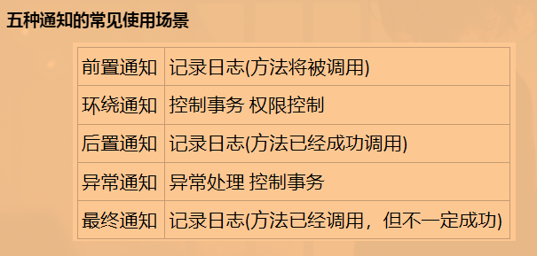
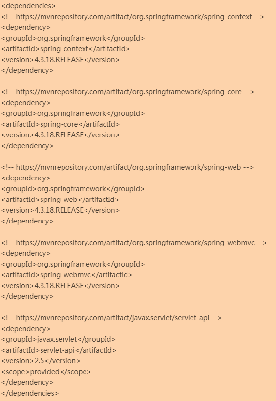

SSM框架–学习笔记(包含SSM视频)
Lesson1 Spring框架
NO1.1 Spring概述
Spring是service层的框架。
- Spring框架：
- 定义：该框架是一个轻量级的、开源的Java EE框架；
- 应用：解决企业应用开发的复杂性；
- 核心：
IOC和AOP，即控制反转和面向切面编程； - 特点：
- 方便解耦，简化开发；
- 兼容与其他框架的开发；
- 便捷的事务操作。
入门案例：
使用IDEA创建一个Java工程，下载Spring5.x版本的JAR包，或者使用Maven导入Spring5的依赖即可；
创建包路径：cn.dyf.domain，然后再domain包中，创建一个User类；
在项目中你自定义的包路径下，创建Spring的核心配置文件：
applicationContext.xml；我这里创建的是cn.dyf.domain，所以我打算把Spirng配置文件放在cn.dyf包下(入门案例，你放哪里都行)。Spring配置文件的标准头信息如下：<?xml version="1.0" encoding="UTF-8"?> <beans xmlns="http://www.springframework.org/schema/beans" xmlns:xsi="http://www.w3.org/2001/XMLSchema-instance" xmlns:p="http://www.springframework.org/schema/p" xmlns:context="http://www.springframework.org/schema/context" xsi:schemaLocation="http://www.springframework.org/schema/beans http://www.springframework.org/schema/beans/spring-beans.xsd http://www.springframework.org/schema/context http://www.springframework.org/schema/context/spring-context.xsd"> <!--配置了一个User类的对象，对象名为user，然后Spring中不叫对象名，而是叫id，所以，配置了一个id为user的User类的对象--> <bean id="user" class="cn.dyf.domain.User"></bean> </beans>编写一个测试类：
piblic class Test{ @Test public void test() { //加载Spring的配置文件applicationContext.xml，获得 ClassPathXmlApplicationContext cac = new ClassPathXmlApplicationContext("classpath:applicationContext.xml"); //获取你刚刚配置的user对象 User u= cac.getBean("user",User.class); //输出了u对象，这个u对象，其实就是刚刚配置的user对象 System.out.println(u); } }
NO1.2 IOC和DI
IOC极大的提高了Java的编程效率。
IOC：
定义：即控制反转，也就是将创建对象的操作交给Spring去管理；
底层原理：
- 首先，将配置在applicationContext.xml中的
<bean>标签进行解析，也就是告诉Spring要生成哪些类的对象；
- 首先，将配置在applicationContext.xml中的
然后，Spring中有个工厂类，这个工厂类会根据xml文件解析出的结果来创建对象，没错，这个工厂类就是专门用于创建某一类对象的工厂；
最后，在工厂类中，通过反射的方式来获取xml文件解析结果中要求创建的类的对象，这就是
<bean>标签中，class属性的作用，为反射提供了类，而反射会根据类获得该类的字节码文件对象，然后该类的字节码文件对象使用newInstance()方法就能够得到你配置在xml文件中的类的对象了。两个接口：IOC思想基于IOC容器，而IOC容器的底层就是能够创建对象的工厂类；
BeanFactory：该接口就是IOC容器的基本实现，即创建对象的功能就是这个接口的一个方法。但该接口是Spring内部接口，常常是Spring内部在使用，所以一般我们开发者不使用该接口来创建工厂实现类；ApplicationContext：是BeanFactory的子接口，但添加了更多更强大的功能在该接口中，一般开发者实现的就是这个接口来创建工厂类。拓展：BeanFactory与ApplicationContext的区别 一、BeanFactory创建的实现类在加载Spring的xml配置文件时，是不会立即生成你要求创建的那些类的对象，也就是说只有到真正用到的时候，才会创建； 二、ApplicationContext则是在加载xml配置文件时就完成了创建对象工作，因为我们在真实的开发中一般都希望将耗费时间和资源的事情在开启服务器时就完成，而不是等到用户真正去使用时，才去创建要用的对象，这对用户体验很不友好。 //============================================================ 拓展：ApplicationContext的两个实现类的区别 一、FileSystemXmlApplicationContext，该实现类用于加载Spring的核心配置文件 applicationContext.xml，但路径名称必须写该配置文件在你电脑上的绝对路径，也就是带盘符的路径 二、ClassPathXmlApplicationContext，该实现类也是用于加载Spring的核心配置文件，但不同的是，加载的是这个配置文件在当前项目中的位置，也就是相对路径。
基本语法格式：
创建Spring的核心配置文件：
applicationContext.xml文件；在applicationContext配置文件中配置类：要想实现IOC，只需要把自己写的类在
applicationContext.xml中配置一下即可；<bean id="你想要创建的对象的名称" class="你想要创建对象的所属类的全包名路径"></bean><bean>标签解析：id：被Spring管理的类所生成的对象的名称；如果是通过类型获取bean的过程中，则可以不设置，也就是说当使用ac.getBean(xxx.class)这种方式获取bean对象时，id属性可以不用设置，但只能有一个这样的类，即被管理的User类只能写一个；name(了解)：和id属性拥有同样的效果，只不过name属性中还可以添加一些符合，而id属性则不可以，该属性一般用于和Struts框架整合使用，但现在一般不用Struts框架了，name属性也就不再使用了；scope：配置bean的作用范围。该属性取值：singleton：单例模式，不设置则默认是该值；prototype：多例模式request：应用在Web项目中，Spring创建该类对象后，会存入request域中session：应用在Web项目中，Spring创建该类对象后，会存入session域中globalsession：应用在Web项目中，必须在porlet环境下使用，即配置后，在子资源中不需要重复做某些操作。如，重复登录。
init-method：bean的初始方法，在创建好bean后会调用该方法；destory-method：bean的销毁方法，在销毁bean之前调用该方法，一般在该方法中释放资源；autowire：表示bean的自动装配。autowire的值有：no：默认值，不进行自动装配；byName：根据名称自动装配。某行代码需要装配某个对象，那么这个对象肯定有个名称，然后根据这个名称，去容器中查找与之名称相同的bean，相同就装配，不相同就不装配；byType：如果容器中存在一个与需要装配的对象，类型相同的bean，那么将与该属性自动装配。如果存在多个该类型bean，那么抛出异常，并指出不能使用byType方式进行自动装配；如果没有找到相匹配的bean，则什么事都不发生，也可以通过设置dependency-check=”objects” 让Spring抛出异常(该值允许自动装配的bean对象有继承或有接口实现关系，也就是说该bean对象可以是父类对象或接口对象)；constructor：与byType方式类似，不同之处在于它应用于构造器参数；如果容器中没有找到与构造器参数类型一致的bean， 那么抛出异常；autodetect：通过bean类的内省机制(introspection)来决定是使用constructor还是byType方式进行自动装配；如果发现默认的构造器，那么将使用byType方式，否则采用constructor；default：由上级标签的default-autowire属性确定。
如果是想要在测试类中获取bean对象：通过配置文件初始化Spring容器，然后通过反射获取类的实例：
ApplicationContext ac= new ClassPathXmlApplicationContext("applicationContext.xml"); 类名 对象名 = ac.getBean("配置文件中你想要获取的类的bean标签的id",你想要获取的类.class);
DI：
定义：是指依赖注入。前提是必须要有IOC的环境，让Spring来管理类时，会将类所依赖的属性(属性中可能会有基本数据类型或引用类型)也一起设置进来；
基本语法格式：
这是set()方法注入属性(推荐该方式)；
<!--普通类型：使用value赋值--> <bean id="被Spring管理的类的对象的名称" class="被Spring管理的类的全包名路径"> <property name="依赖的属性名" value="依赖的属性的值"></property> </bean> //---------------------------------------------------------------- <!--对象类型：使用ref赋值，值一般是其他对象的id或者name--> <bean id="被Spring管理的类的对象的名称" class="被Spring管理的类的全包名路径"> <property name="依赖的属性名" ref="依赖的属性的对象的id"></property> </bean> 拓展：设置null值和含有特殊符号的值 一、设置null值，如下所示： <property name="依赖的属性名" > <null/> </property> 二、设置包含特殊符号的值，如下所示： <property name="依赖的属性名" > <value><![CTATA[这里填含有特殊符号的值]]></value> </property> //---------------------------------------------------------------- <!--集合类型：在<property>标签中使用<list>标签(或<array>标签或<set>标签或<map>标签，根据需要选择就行)，然后赋值即可--> <bean id="被Spring管理的类的对象的名称" class="被Spring管理的类的全包名路径"> <property name="依赖的属性名" > <list> <!--集合里面是普通元素用value标签--> <value>666</value> <value>666</value> <!--集合里面是对象元素用ref标签--> <ref bean="要引用的bean的id值"/> <ref bean="要引用的bean的id值"/> </list> <!--map标签--> <map> <!--使用这种--> <entry> <key> <value>111</value> </key> </entry> <!--或者使用这种--> <entry key="" value=""></entry> </map> </property> </bean> 拓展：提取公共集合 一、添加名称空间 http://www.springframework.org/schema/util http://www.springframework.org/schema/util/spring-util.xsd 二、在xml中添加标签：<util:集合名称></util:集合名称> <util:集合名称 id="给这个集合取个名称"> <!-- 下面二选一即可 --> <value></value> <ref></ref> </util:集合名称>这是有参构造方法注入属性；
<!--普通类型：使用value赋值；其他类型就用ref，参考上方的set()方法注入属性--> <bean id="被Spring管理的类的对象的名称" class="被Spring管理的类的全包名路径"> <constructor-arg name="依赖的属性名" value="依赖的属性的值"></constructor-arg> <!-- 当注入的属性是一个对象时，使用ref属性即可 <constructor-arg name="依赖的属性名" ref="依赖的对象的id"></constructor-arg> --> </bean>P命名空间注入属性；
//在xml中添加命名空间 xmlns:p="http://www.springframework.org/schema/p" //----------------------------------------------------- //使用p命名空间为属性赋值 <bean id="user" class="cn.dyf.domain.User" p:name="hanyan" p:age="24" p:product="product对象的id值"> </bean>
FactoryBean：
定义：是一个工厂Bean，可以生成某一个类型Bean实例；
作用：可以让我们自定义Bean的创建过程。BeanFactory是Spring容器中的一个基本类也是很重要的一个类，在BeanFactory中可以创建和管理Spring容器中的Bean，它对于Bean的创建有一个统一的流程；
//FactoryBean是一个接口 public interface FactoryBean<T> { //返回的对象实例 T getObject() throws Exception; //Bean的类型 Class<?> getObjectType(); //true是单例，false是非单例。在Spring5.0中此方法利用了JDK1.8的新特性变成了default方法，返回true boolean isSingleton(); } //-------------------------------------------- //FactoryBean接口的实现类 public class MyFactory implements FactoryBean { //Bean实例 @Override public Object getObject() throws Exception { //这个Bean是我们自己new的，这里我们就可以控制Bean的创建过程了 return new User("小明",11); } //Bean类型 @Override public Class<?> getObjectType() { return User.class; } //是否单例 @Override public boolean isSingleton() { return true; } } //-------------------------------------------- <!--配置MyFactory的bean--> <bean id="myFactory" class="cn.dyf.domain.MyFactory"></bean> //-------------------------------------------- @Test public void test() { ClassPathXmlApplicationContext cac = new ClassPathXmlApplicationContext("classpath:applicationContext.xml"); MyFactory mf= cac.getBean(MyFactory.class); System.out.println(mf); } //-------------------------------------------- 测试结果：User [name = 小明， age= 11] 说明：配置的是MyFactory，也就是本该生成的应该是MyFactory的bean，却得到了MyFactory工厂里生产的User对象，其原因是MyFactory实现了FactoryBean接口
Spring中bean的生命周期。
- Spring中的bean在创建过程中大概分为以下几个步骤：实例化->填充属性->执行Aware接口->初始化->可用状态->销毁；解析过程：
- 实例化：就是调用类的构造器进行对象创建的过程；
- 填充属性：是指注入bean的依赖或者给属性赋值，一般会调用set方法；
- Aware接口：是Spring中的“觉醒”接口，是Spring容器通过回调向bean注入相关对象的接口；
- 如果Bean实现了BeanNameAware接口的话，Spring将Bean的Id传递给setBeanName()方法；
- 如果Bean实现了BeanFactoryAware接口的话，Spring将调用setBeanFactory()方法，将BeanFactory容器实例传入；
- 如果Bean实现了ApplicationContextAware接口的话，Spring将调用Bean的setApplicationContext()方法，将bean所在应用上下文引用传入进来；
- 如果Bean实现了BeanPostProcessor接口，Spring就将调用他们的postProcessBeforeInitialization()方法，即初始化之前对bean进行操作；
- 如果Bean 实现了InitializingBean接口，Spring将调用他们的afterPropertiesSet()方法。类似的，如果bean使用init-method声明了初始化方法，该方法也会被调用；
- 如果Bean 实现了BeanPostProcessor接口，Spring就将调用他们的postProcessAfterInitialization()方法，即初始化之后对bean进行操作；
- 初始化：是指完成bean的创建和依赖注入后进行的一个回调，可以利用这个回调进行一些自定义的工作，实现初始化的方式有三种，分别是实现InitializingBean接口、使用@PostConstruct注解和xml中通过init-method属性指定初始化方法;
- 可用状态：是指bean已经准备就绪，可以被应用程序使用了，此时bean会一直存在于Spring容器中；
- 销毁：是指这个bean从Spring容器中消除，这个操作往往伴随着Spring容器的销毁。实现销毁方法的方式有3中，分别为实现DisposableBean接口、使用@PreDestroy注解和xml中通过destroy-method属性指定
- Spring中的bean在创建过程中大概分为以下几个步骤：实例化->填充属性->执行Aware接口->初始化->可用状态->销毁；解析过程：
分模块开发：
定义：是指开发者一般会负责不同的功代码编写，因此可能会需要引入外部文件或引入不同的配置文件。
如，数据库配置文件等等；解决引入外部资源文件的问题：
引入context名称空间；
//先添加这个 xmlns:context="http://www.springframework.org/schema/context //后添加这个 http://www.springframework.org/schema/context http://www.springframework.org/schema/context/spring-context.xsd使用标签
<context:property-placeholder>。<context:property-placeholder location="classpath:外部配置文件名称，要带上后缀"> 说明：location属性，是指加载指定位置下的配置文件
解决存在多个配置文件的问题：
在生产环境中：在applicationContext.xml主配置文件中使用标签引入分配置文件即可(推荐)；
<import resource="需要引入的其他的配置文件"></import>;在测试类中：创建Spring的工厂对象时，只需要多写几个配置文件参数即可；
ApplicationContext springFactory = new ClassPathXmlApplicationContext("applicationContext1.xml,applicationContext2.xml");
使用Spring的IOC注解开发(推荐)：
在applicationContext配置文件中，引入context名称空间后，需要配置扫描组件标签；
//引入context名称空间 //先添加这个 xmlns:context="http://www.springframework.org/schema/context //后添加这个 http://www.springframework.org/schema/context http://www.springframework.org/schema/context/spring-context.xsd //--------------------------------------- <!--这个标签是用于扫描类里的注解--> <context:component-scan base-package="配置需要扫描的包的路径" /><context:component-scan>标签解析：use-default-filters：是否使用默认的扫描进行过滤，而默认扫描就是扫描base-pachage属性的值；另外该属性默认是true；如果是false，那么就表示要用自己的扫描规则。<context:component-scan>中有两个子标签：<context:include-filter>：在base-package属性的范围下，用来告知哪些类需要注册成Bean对象，使用该子标签type和expression属性一起协作来定义组件扫描策略。使用这个子标签的时候，use-default-filters属性必须设置为false；- type：
- annotation：扫描指定注解所标注的类。通过expression属性指定要扫描的注解；
- assignable：扫描派生于expression属性所指定类型的那些类；
- aspectj：扫描与expression属性所指定的AspectJ表达式所匹配的那些类
- custom：使用自定义的org.springframework.core.type.TypeFliter实现类，该类由expression属性指定；
- regex：过滤器扫描类的名称与expression属性所指定正则表示式所匹配的那些类。
- type：
<context:exclude-filter>：在base-package属性的范围下，用来告知哪些类不需要注册成Bean对象，使用type和expression属性一起协作来定义组件扫描策略。使用这个子标签的时候，use-default-filters属性必须设置为true。
在需要使用注解开发的类的上面一行，添加注解：
@Component：用于告诉Spring，这是一个组件，你只管帮我生成对应的bean对象即可；
@Controller：用于Web层；
@Service：用于Service层；
@Repository：用于Dao层。
拓展：@Component、@Controller、@Service、@Repository四个注解的区别 一、这四个注解没区别，功能都是为注解的类生成bean对象；即哪怕你用@Controller、@Service、@Repository注解的类都用@Component去注解，完全没有问题； 二、你硬要说区别的话，那就是让开发人员分清楚，哪一层是哪一层，明确的分清每一层的作用。 三、这四个注解中都有一个value属性，就是当前注解的类所生成的对象的名称。不写的话，默认是当前类名首字母小写。如，User类，生成的对象名称为user。
如果有代码需要DI，意思就是某一行代码需要用到某个对象，则在xml中为那个对象的所属类进行配置
<bean>标签即可；然后在需要用到的地方，使用以下注解引用即可：普通类型：
@Value：即为变量中注入一个值，使用value属性写入要注入的值。
如，@Value(value="aaa")，表示给当前注解的变量注入了字符串aaa；其他形式：@Value("#{}")：该形式其实是SpEL表达式，可以表示常量的值，或者获取bean中的属性；@Value("#{4}") //获取数字4 private int number; @Value("#{'hello world!'}") //获取字符串常量 private String str; @Value("#{user.name}") //获取bean的属性 private String username;@Value("${}")：该形式用于获取配置文件中的属性值，通常用于获取写在xxx.properties中的内容。//xxx.properties文件中的值 jdbc.driverClass=aaa dbc.url=aaa jdbc.user=ccc //-------------------------- //类中可以通过@Value("${}")来获取相应的值 @Value(""${jdbc.user}) private String name;
对象类型：
@Autowired(推荐)：根据需要注入的对象的Class类型，进行自动装配；@Qualifier：根据需要注入的对象的名称，进行自动装配；该注解一般和@Autowired注解一起使用；具有属性：value：注入指定名称的bean对象；
@Autowired @Qualifier(“value=user”) //在容器中找一个bean的id为user的对象，注入到这下面的 private User user;
Resource：根据对象的Class类型或名称，进行自动装配，该是Javax包中的注解；根据名称注入时，需要添加一个name属性来指定要注入到当前对象中的bean的id；@Controller public class UserController{ @Resources //引用UserService的bean对象，这时是按类型自动装配 UserService userService; @Resources(name="userDao") //这时是按名称自动装配，将容器中bean的id为userDao的对象，注入到当前ud对象中去 UserDao ud; .... }
xml文件也可以用配置类来进行替换，需要使用到注解：
@Configuration：用于类上，告诉Spring，当前使用该注解的类是一个配置类，且也会生成bean对象，因为该注解中包含了@Conponent注解；@ComponentScan：扫描指定包下的@Component注解并生成相应的bean对象；除此之外还可以使用@Bean注解来指定生成某些类的bean对象；@Configuration @ComponentScan(basePackage="要扫描的包路径") public class SpringConfig{ @Bean //可以自己手动添加要生成的bean对象 public User getUser(){ return new User; } }
Spring也集合了Test，也支持测试类的注解开发，只需导入相应的test的JAR包或依赖，然后再在测试类上面添加相应的
@Runwith和@ContextConfiguration注解即可；@Runwith(SpringJUnit4ClassRunner.class) @ContextConfiguration("classpath:applicationContext.xml") public class Test{ ... } 说明：也就是说有了注解之后可以不需要创建工厂获取实例，意思就是不需要再写ApplicationContext ac = new ClassPathXmlApplicationContext("applicationContext1.xml,applicationContext2.xml")和ac.getBean("xxx")这两个方法了
NO1.3 AOP
AOP是Spring的特性之一。
AOP：
定义：是指面向切面编程；
作用：降低业务逻辑各部分之间的耦合度，提高程序的可重用性；
影响：AOP是OOP(面向对象)的扩展和延伸，解决OOP开发遇到的问题；Spring中的AOP可以理解为是一种思想，而AspectJ则是这种AOP思想的具体实现，因为Spring的AOP开发，使用的是基于AspectJ的AOP开发；
底层原理：
问题的提出：当我们在项目开发中遇到一个问题：我想给用户登陆接口添加一些别的功能，像什么权限校验功能，日志记录功能等等，但又不能改动源码，这怎么办呢？这个时候，AOP就可以为这种问题提供解决的办法；
Spring中的AOP其实是基于动态代理来实现的，什么叫动态代理呢？个人理解为，就是让系统实时地为你创建一个动态代理类，而这个类实现了你想要的基本功能和增强功能，两者兼具。
如，上面登录接口中的登录功能就是该接口中基本的功能，而像什么权限校验功能，日志记录功能等等，这些就是增强的功能；而在Spring中，动态代理有两种，默认如果目标对象是个接口，则使用JDK动态代理，否则使用CGLIB来生成代理类：JDK动态代理：一般用于接口的动态代理。其实，所谓的JDK动态代理，如上面所说，就是系统实时的帮你造一个动态代理类，实现了目标接口，并且实现类中有你想要的基本功能和增强功能；//登录接口 interface Login{ void login(String username,String password); } //------------------------ //登录接口的实现类 public class LoginImpl implements Login{ @Override void login(String username,String password){ //登录代码 } } //------------------------ //JDK动态代理类 public class LoginProxy implements Login{ //权限校验功能 @Override void login(String username,String password){ //登录代码 } //日志记录功能 }CGLIB动态代理：一般用于非接口的动态代理。既然用于非接口，那么肯定就是用于一个类，所以CGLIB的动态代理，就是继承了目标类而产生的动态代理类，当然，新产生的这个动态代理类中肯定也包含了基本功能和增强功能；
JDK动态代理具体实现：
如上面原理所说，JDK动态代理就是让系统实时的帮你创建一个类，然后该类中实现类你想要的基本功能以及增强功能。当然，实际的动态代理不可能两行代码搞定，所以我们需要手动创建JDK动态代理来学习动态代理的实现；
首先，JDK动态代理要使用到一个类：Proxy，这个类就是动态代理类，该类有以下方法：
- protected Proxy(InvocationHandler h)：构造函数，用于给内部的h赋值；
static Class getProxyClass (ClassLoaderloader, Class[] interfaces)：获得一个代理类，其中loader是类加载器，interfaces是目标类所拥有的全部接口的class的数组；
static Object newProxyInstance(ClassLoaderloader, Class[] interfaces, InvocationHandler h)：返回代理类生成的一个对象；前两个参数我们都了解过了，第三个参数就是你想要的增强的功能所在的对象(意思就是把增强的功能放到了h对象里)，但InvocationHandler是一个接口，所以我们需要创建一个InvocationHandler接口的实现类才能使用。
然后，创建InvocationHandler接口的实现类；该接口要重写一个invoke方法，即
invoke(Object obj,Method method, Object[] args)；- obj：一般是指被代理类的真正对象；method：是被代理类所拥有的方法；
- args：被代理类的方法的参数数组。
public class Handler implements InvocationHandler { //这个就是我们要代理的真正的对象 private Object obj; //构造方法，给我们要代理的真实对象赋初值 public InvocationHandlerImpl(Object obj){ this.obj = obj; } //在这个方法里写如增强的功能，以及调用被代理类的基本功能 public Object invoke(Object proxy, Method method, Object[] args) throws Throwable{ //在调用代理的真正对象的基本功能前，我们可以添加一些自己的操作，也就是增强功能1 System.out.println("这是基本功能前的增强功能"); System.out.println("Method:" + method); //调用被代理的真正对象中的方法 Object res = method.invoke(obj, args); //增强功能2 System.out.println("这是基本功能后的增强功能"); return res; } }
之后，调用Proxy类中的newProxyInstance()方法，生成动态代理类的一个对象；最后生成测试类，测试。
//登录接口 interface Login{ void login(String username,String password); } //------------------------ //登录接口的实现类，也就是需要被代理的类 public class LoginImpl implements Login{ @Override void login(String username,String password){ System.out.println("登录成功"); } } //--------------------------- //JDK动态代理类 public class MyProxy{ //被代理类所实现的接口的Class对象数组 private Class[] interfaces; //被代理类想要增强的功能所在的代理类 private InvocationHandler h; public MyProxy(Class[] interfaces,InvocationHandler h){ this.interfaces = interfaces; this.h = h; } public Object static getTargetProxy(){ //调用Proxy类中的newProxyInstance()方法 Proxy.newProxyInstance( MyProxy.class.getClassLoader(), interfaces, h ); } } //--------------------------- //测试类 public class MyTest{ public static void main(String[] args){ //这个是需要被代理的对象 LoginImpl myLogin = new LoginImpl(); //这个是需要被代理的对象，其类所实现的接口 Class[] interfaces = {Login.class}; //先创建一个Handler对象，该类实现了接口InvocationHandler Handler hand = new Handler(myLogin); //创建MyProxy类，生成代理类对象 Login mp = (Login)new MyProxy(hand, interfaces); //调用登录方法 mp.login(“dyf”,"666"); } } 输出结果： 这是基本功能前的增强功能 login 登录成功 这是基本功能后的增强功能
AOP中的概念：
Joinpoint：连接点，其实就是方法，意思就是理论上只要是个方法都可以被增强；Pointcut：切入点，即在实际开发中，实际被增强了的方法，则该方法就是切入点；Advice：通知或者增强，即对被增强的方法，加入想要增强的代码，这部分代码就是通知或者增强；前置通知(使用@before注解)：在连接点前面执行，前置通知不会影响连接点的执行，除非此处抛出异常；后置通知(使用@after-returning注解)：在连接点正常执行完成后执行，如果连接点抛出异常，则不会执行；最终通知(使用@after注解)：在连接点执行完成后执行，不管是正常执行完成，还是抛出异常，都会执行最终通知中的内容；异常通知：在连接点抛出异常后执行(使用@after-throwing注解)；环绕通知(使用@around注解)：环绕通知围绕在连接点前后。这是最强大的通知类型，能在方法调用前后自定义一些操作；环绕通知还需要负责决定是继续处理join point(调用ProceedingJoinPoint的proceed方法)还是中断执行。
Introduction：引介，即类层面的增强，往类里面添加新的属性、新的方法等；Target：被增强的对象；Weaving：织入，即将想要增强的代码应用到目标对象的过程；proxy：代理对象，即增强后所产生的代理类对象；Aspect：切面，即多个通知和多个切入点的组合；
AOP开发，包括两种方式：
与XML方式：
创建项目后，导入跟AOP和IOC相关的JAR包或依赖；
编写切面类，即编写一个普通类，里面定义切入点和通知；
//这就是切面类，里面包含了增强的功能方法 public class MyAspectXML{ //切入点 public void anyMethod(){} //前置通知：可以获得切入点信息，增强方法需要JoinPoint类型的参数joinPoint，就是会把目标对象方法的一些信息封装到这个对象里面，供你使用 public void beforeTest(JoinPoint joinPoint){ System.out.println("前置-----权限校验"+joinPoint); } //后置通知：可以通过AOP配置里的属性：returning获得方法返回值； public void afterTest(Object result){ System.out.println("后置-----记录运行日志"+result); } //最终通知，无论是否会发生异常，都会执行的通知 public void finallyTest(){ System.out.println("最终-----通知运行完毕"); } //异常通知：可以通过AOP配置里的属性：throwing属性获得异常的返回信息，并将其封装到了ex这个变量中； public void exceTest(Exception ex){ System.out.println("异常-----出现异常了"+ex); } //环绕通知：该通知必须返回Object，增强方法需要参数ProceedingJoinPoint，并用该类的对象调用proceed()方法代执行目标方法 public Object roundTest(ProceedingJoinPoint joinPoint){ System.out.println("环绕-----测试1"); try{ //代执行目标方法，且有可能目标方法有返回值，用Object接收 Object obj = joinPoint.proceed(); } catch (Throwable e){ e.printStackTrance(); } System.out.println("环绕-----测试2"); } }在applicationContext.xml中，通过AOP标签的配置完成对目标类产生代理；
首先，添加AOP的XML配置根标签：
<aop:config>，表示要对AOP进行配置；<aop:config> <!--所有的AOP配置均在该标签下完成--> </aop:config>其次，在AOP根标签中，添加标签：
<aop:pointcut>，表示要给哪些方法进行增强；可以定义多个该标签，以满足业务逻辑需要；<aop:config> <!--该标签配置的是哪些方法需要进行增强--> <aop:pointcut expression="切入点表达式" id="切入点id" /> </aop:config><aop:pointcut>标签解析：expression：该属性表示需要写入一个切入点表达式，用于指定具体要增强的方法；基本语法格式：expression([权限修饰符] 方法返回值 包名路径.类名.方法名(参数)) 说明： 一、权限修饰符我们一般都写*，即任意权限修饰符； 二、方法返回值可以省略不写，也可以写*，即不管你方法有没有返回值； 三、参数一般用..代替，即表示任意参数；返回值用*，表示任意返回值；id：即切入点的id，用于通知标签中的pointcut-ref属性；也就是说，到时候增强会根据这个id来找到需要增强的方法；
然后，仍然在AOP根标签中，添加标签：
<aop:aspect>，表示增强方法的具体配置，即增强的功能都在这里面进行详细配置；
- `<aop:aspect>`标签解析：<aop:config> <!--该标签配置的是哪些方法需要进行增强--> <aop:pointcut expression="切入点表达式" id="切入点id" /> <!--该标签是给上面需要增强的方法，配置使用哪种增强的功能--> <aop:aspect ref="切面类的引用"> <!--前置通知标签，增强的功能在目标方法之前触发， 可以获得切入点信息(增强方法需要参数JoinPoint)--> <aop:before method="切面类中增强方法的名称" pointcut-ref="上面切入点的id" /> <!--后置通知标签，可以通过returning属性获得方法返回值--> <aop:after-returning method="切面类中增强方法的名称" pointcut="expression表达式" returning="result" /> <!--环绕通知(增强方法需要参数ProceedingJoinPoint， 并用该类的对象调用proceed()方法代执行目标方法)--> <aop:around method="切面类中增强方法的名称" pointcut="expression表达式" /> <!--最终通知，无论是否有异常，都会执行通知里面的代码--> <aop:after method="切面类中增强方法的名称" pointcut="expression表达式" /> <!--异常通知，出现异常时，会执行异常通知里面的代码， 通过throwing属性获取异常的信息--> <aop:after-throwing method="切面类中增强方法的名称" pointcut="expression表达式" throwing="ex"/> </aop:aspect> </aop:config>- ref：该属性用于切面类的引入，即告知Spring，你写的切面类放在哪个位置；一般切面类交给Spring管理后，只需要写bean的id就行，@Component注解生成bean的id一般为类名的首字母小写。
注意：<aop:pointcut />这个就是配置切入点的标签，该标签中：expression表达式，是指需要为满足该表达式下的方法们进行增强；id属性，是指为这些需要增强的方法名创建一个切面id； <aop:aspect />这个就是配置切面类的标签，标签中：ref属性，是指切面类的类名； <aop:通知类型 />这个就是配置通知类型，标签中：method属性，是指切面类中，具体的增强方法的方法名；pointcut-ref属性，是指给哪些需要增强的方法进行增强，即切入点的id；
AOP开发(注解方式，推荐该方式)：
编写目标类(也就是需要被增强的类)并在applicationContext.xml中配置，交给Spring管理，即在目标类上添加@Component注解；
编写切面类(即包含增强功能和切入点的类)并在applicationContext.xml中配置，交给Spring管理，即在切面类上添加@Component注解；
在applicationContext.xml中，开启AOP注解开发，使用标签：
<!--该标签就表示开启AspectJ的自动代理功能--> <aop:aspectj-autoproxy />再在切面类上添加切面注解：@Aspect，Spring会自动识别该注解，并将该注解下注明的类认为是切面类；
注意：如果有多个切面，有默认的先后执行顺序；但是可以用@Order(num)定义优先级，num越小，也就是数字越小(但不能为负数)，优先级越高。在增强方法上配置通知类型注解：
@Before(value="execution(* com.dyf.CustomerDao.*(..))") public ..... { //这里是增强功能 .... }另外，还可以提取一个公共切入点，公共切入点的注解格式：
基本语法格式：
@Pointcut(value="execution(* com.dyf.CustomerDao.*(..)") private void pointcut(){ ... }而增强方法上注解则变成：@Before(value=”切面类名.切入点名”)，即可；
@pointcut注解的实质是：将某一类需要增强的方法们，放在了一个@Pointcut注解标记的方法上；然后，当这类方法需要不同的通知时，只需修改通知上调用的@Pointcut方法即可；//这是通知和切点紧密联系在一起 @Before(value = "execution(* com.dyf.Dao.*(..))") public void before(){ System.out.println("我是前置通知！"); } //========================================================= //定义切点1 @Pointcut(value = "execution(* com.dyf.Dao.update())") public void MyPoint1(){} //定义切点2 @Pointcut(value = "execution(* com.dyf.Dao.delete())") public void Mypoint2(){} //--------------------------------------------------------- //AfterReturning通知有返回值，使用returning来接受返回值 @AfterReturning(value = "Mypoint2()",returning = "element") public void After(Object element){ //打印输出了返回值 System.out.println("我删除了"+element); } @Around(value="MyPoint1()") public Object around(ProceedingJoinPoint joinPoint){ Object obj=null; System.out.println("环绕前"); try { obj=joinPoint.proceed(); } catch (Throwable throwable) { throwable.printStackTrace(); } System.out.println("环绕后"); return obj; }
NO1.4 Jdbc Template
Jdbc Template其实是Spring框架对JDBC的封装。
JDBC Template：
使用Jdbc模板操作数据库：
创建项目，并导入数据库JAR包或依赖；然后创建连接池(druid连接池、C3P0连接池、JDBC内置连接池均可)，获取连接池对象；一般的，有关连接池之类的属性，我们会放在单独的属性文件中，这时就需要在Spring中引入属性文件；
注意：该步骤可以交给Spring管理。<!--使用该标签引用数据库的属性文件--> <context:property-placeholder location="classpath:jdbc.properties"> //--------------------------------------------- <!--交给Spring管理--> <bean id="连接池变量名" class="连接池类的全包名路径"> <!--在其中注入数据库的四大要素：驱动、url、账号、密码即可--> <property name="driverClassName" value="${jdbc.driverClassName}" /> <property name="url" value="${jdbc.url}" /> <property name="username" value="${jdbc.username}" /> <property name="password" value="${jdbc.password}" /> </bean>创建Jdbc模板；
注意：该步骤可以交给Spring管理。原本需要自己写： JdbcTemplate jdbcTemplate = new JdbcTemplate(连接池对象); //-------------------------------------------------------------------- <!--交给Spring管理--> <bean id="jdbc模板的变量名" class="jdbc模板类的全包名路径"> <property name="连接池对象名" ref="需要注入的真正连接池对象"> </bean> 注意：这里jdbc模板类的全包名路径一般为：org.springframework.jdbc.core.JdbcTemplateJdbcTemple中常用方法语句；
增删改： jdbcTemplate.update(sql语句,可变参数); 如： String sql = "insert into emp values(null,?,?,?)"; jdbcTemplate.update(sql,"邓先森",27,"男"); //------------------------------------------------------------ 查询： jdbcTemplate.queryForObject(sql语句,RowMapper<T>接口的实现类对象,可变参数); String sql = "select eid,ename,age,sex from emp"; RowMapper<Emp> rowMapper = new BeanPropertyRowMapper<>(Emp.class); List<Emp> list = jdbcTemplate.update(sql,rowMapper); //遍历list .... 说明：常用查询方法： 一、public T queryForObject(String sql, Class<T> requiredType)：执行sql查询语句，返回一个指定类型的数据，即方法中第二个参数就是知道返回值的类型 二、public T queryForObject(String sql, RowMapper<T> rm, Object... args)：执行查询语句，返回一个指定类型的对象 三、public List<T> query(String sql, RowMapper<T> rm, Object... args)：执行查询语句，返回一个集合 四、public int[] batchUpdate(String sql,List<Object[]> args)：批量操作，一般做批量添加操作较多；第二个参数为批量添加的多个记录数组
NO1.5 事务
大家所了解的事务(Transaction)，它是一些列严密的操作，要么操作都完成，要么操作都回滚撤销。
Spring事务：
定义：就是逻辑上一组操作，要么都成功，要么都失败，不存在一半成功，一半失败。另外Spring的事务管理是基于底层数据库本身的事务处理机制。数据库事务的基础，是掌握Spring事务管理的基础；
事务的ACID四种特性：ACID是Atomic(原子性)、Consistency(一致性)、Isolation(隔离性)和Durability(持久性)的英文缩写；
原子性(Atomicity)：事务最基本的操作单元，要么全部成功，要么全部失败，不会结束在中间某个环节；事务在执行过程中发生错误，会被回滚到事务开始前的状态，就像这个事务从来没有执行过一样；一致性(Consistency)：指的是在一个事务执行之前和执行之后，数据库都必须处于一个正确的状态，什么叫正确的状态呢，就是满足预订的约束就叫做正确的状态。如，如果事务成功地完成，那么系统中所有变化将正确地应用，此时数据库就处于正确的状态；如果在事务中出现错误，那么系统中的所有变化将自动地回滚，系统返回到原始状态，这时数据库也是正确的状态，也就是说，要么不改变，要么按照开发者的要求进行改变，这就是正确的状态。隔离性(Isolation)：指的是在并发环境中，当不同的事务同时操纵相同的数据时，每个事务都有各自的完整数据空间；由并发事务所做的修改必须与任何其他并发事务所做的修改隔离；事务查看数据更新时，数据所处的状态要么是另一事务修改它之前的状态，要么是另一事务修改它之后的状态，事务不会查看到中间状态的数据；持久性(Durability)：指的是只要事务成功结束，它对数据库所做的更新就必须永久保存下来；即使发生系统崩溃，重新启动数据库系统后，数据库还能恢复到事务成功结束时的状态；
Spring中事务的两种实现方式：
编程式事务管理(了解)；
在Spring中配置平台事务管理器；
<bean id="事务管理器的名称" class="事务管理器类全包名路径"> <property name="连接池名" ref="连接池bean对象的id"> </bean>配置事务管理的模板类；
<bean id="事务管理模板的名称" class="事务管理模板类的全包名路径"> <property name="事务管理器的名称" ref="事务管理器bean对象id"> </bean>在Service层添加事务模板对象，并调用方法：
transactionTemplate.execute( new TransactionCallbackWithoutResult(){ @Override protected void doInTransactionWithoutResult(TransactionStatus arg0){ 这里放入需要加入事务的代码体； } });
声明式事务管理(推荐)；
XML文件形式：
在Spring中配置平台事务管理器；
<!--配置事务管理器--> <bean id="事务管理器的名称" class="事务管理器类全包名路径"> <property name="连接池名" ref="连接池bean对象的id"> </bean>添加事务名称空间，然后配置事务的属性；
//先添加这个 xmlns:tx="http://www.springframework.org/schema/tx //后添加这个 http://www.springframework.org/schema/tx http://www.springframework.org/schema/tx/spring-tx.xsd //---------------------------------------------- <!--配置事务属性--> <tx:advice id="事务的id" transactions-manager="事务管理器对象id"> <!--确定哪些方法需要使用事务功能之后，再用这个标签进一步细分到每一个要使用事务功能的方法上> <tx:attributes> <tx:method name="需要使用事务的方法"> <tx:attributes> </tx:advice>配置事务的切入点，以及把事务和切入点关联起来；
<!--配置事务切入点，以及把事务切入点和事务关联起来--> <aop:config> <!--配置事务切入点，就是告诉Spring哪些方法需要使用事务--> <aop:pointcut expression="execution(切入点表达式)" id="切入点id，自定义" /> <!--把需要使用事务功能的方法和切入点关联起来，也就是说<aop:pointcut>这个标签下表示大概有哪些方法要用事务，<tx:advice>这个标签则在<aop:pointcut>标签的范围下具体确定哪些方法要使用事务功能，然后把这两者关联起来的意思--> <aop:advicor advice-ref="<tx:advice>标签的id" pointcut-ref="就上面这个id，意思是把增强的功能放到这个id上的方法里"> </aop:config>
注解形式：
在Spring中配置平台事务管理器；
<bean id="事务管理器的名称" class="事务管理器类全包名路径"> <property name="连接池名" ref="连接池bean对象的id"> </bean>开启注解事务；
<tx:annotation-driven transaction-manager="事务管理器对象">在Service层上添加@Transactional注解即可开启事务。@Transactional注解解析：
注意：如果该注解用在类上，则对类中所有方法都使用事务功能；用在方法上则只对该方法使用事务功能。readOnly：该属性用于设置当前事务是否为只读事务，设置为true表示只读，false则表示可读写，默认值为false；简单的说，就是设置为true之后，访问数据不会加锁，提高查询效率，但会只允许查询操作；@Transactional(readOnly=true)rollbackFor：该属性用于设置需要进行回滚的异常类数组，当方法中抛出指定异常数组中的异常时，则进行事务回滚；指定单一异常类：@Transactional(rollbackFor=RuntimeException.class) 指定多个异常类： @Transactional(rollbackFor={RuntimeException.class, Exception.class})rollbackForClassName：该属性用于设置需要进行回滚的异常类名称数组，当方法中抛出指定异常名称数组中的异常时，则进行事务回滚；指定单一异常类名称：@Transactional(rollbackForClassName="RuntimeException") 指定多个异常类名称： @Transactional(rollbackForClassName={"RuntimeException","Exception"})noRollbackFor：该属性用于设置不需要进行回滚的异常类数组，当方法中抛出指定异常数组中的异常时，不进行事务回滚；指定单一异常类：@Transactional(noRollbackFor=RuntimeException.class) 指定多个异常类： @Transactional(noRollbackFor={RuntimeException.class, Exception.class})noRollbackForClassName：该属性用于设置不需要进行回滚的异常类名称数组，当方法中抛出指定异常名称数组中的异常时，不进行事务回滚；指定单一异常类名称：@Transactional(noRollbackForClassName="RuntimeException") 指定多个异常类名称：@Transactional(noRollbackForClassName={"RuntimeException","Exception"})propagation：该属性用于设置事务的传播行为，具体取值可参考下一个小节；@Transactional(propagation=Propagation.NOT_SUPPORTED, readOnly=true)isolation：该属性用于设置底层数据库的事务隔离级别，事务隔离级别用于处理多事务并发的情况，通常使用数据库的默认隔离级别即可，基本不需要进行设置；timeout：该属性用于设置事务的超时秒数，即如果超过规定时间则进行事务回滚操作；默认值为-1表示永不超时。
Spring事务的传播行为：
定义：指的就是当一个事务方法去调用另一个事务方法时，当前的事务方法应该如何进行；
Spring定义的七种传播行为：
PROPAGATION_REQUIRED(常用)：是指如果当前没有事务，就新建一个事务，如果已经存在一个事务中，加入到这个事务中；这是最常见的选择，也是Spring默认的传播行为；@Transactional(propagation = Propagation.REQUIRED) public void methodA() { methodB(); // do something } // 事务属性为REQUIRED @Transactional(propagation = Propagation.REQUIRED) public void methodB() { // do something } 说明： 一、单独调用methodB方法时，因为当前上下文不存在事务，所以会开启一个新的事务； 二、调用methodA方法时，因为当前上下文不存在事务，所以会开启一个新的事务；当执行到methodB时，methodB发现当前上下文有事务，因此就加入到当前事务中来。PROPAGATION_REQUIRES_NEW(常用)：是指无论当前是否有事务，开启一个新的事务；如果当前有事务，则先将这个存在的事务挂起；@Transactional(propagation = Propagation.REQUIRED) public void methodA() { doSomeThingA(); methodB(); doSomeThingB(); // do something else } // 事务属性为REQUIRES_NEW @Transactional(propagation = Propagation.REQUIRES_NEW) public void methodB() { // do something } 说明： 一、当单独调用methodB时，会创建新的事务； 二、当调用methodA，执行到methodB时，总是会单独给methodB创建一个新的事务，并挂起methodA的事务；当methodB执行完成后，回到methodA的事务中，无论methodA的事务是否成功，methodB的事务都不会受其影响(即该提交提交，该回滚回滚)，反过来，methodB事务也是一样的，也就是这两者的事务都不会互相干扰。PROPAGATION_SUPPORTS：是指如果当前有事务，就加入当前事务，如果当前没有事务，就以非事务方式执行；@Transactional(propagation = Propagation.REQUIRED) public void methodA() { methodB(); // do something } //事务属性为SUPPORTS @Transactional(propagation = Propagation.SUPPORTS) public void methodB() { // do something } 说明：单纯的调用methodB时，methodB方法是非事务执行的；当调用methdA时，methodB则加入了methodA的事务中；PROPAGATION_NOT_SUPPORTED：是指总是以非事务的方式执行，如果当前有事务，则挂起事务；@Transactional(propagation = Propagation.REQUIRED) public void methodA() { doSomeThingA(); methodB(); doSomeThingB(); // do something else } // 事务属性为NOT_SUPPORTED @Transactional(propagation = Propagation.NOT_SUPPORTED) public void methodB() { // do something } 说明：单独调用methodB，以非事务的状态执行；调用methodA，执行到methodB时，methodB以非事务的方式执行，并挂起methodA的事务，当methodB执行完成后，回到methodA中，继续执行methodA的事务PROPAGATION_MANDATORY：是指如果当前有事务，则加入当前事务；如果没有事务，则抛出异常；即该传播行为，必须有事务；@Transactional(propagation = Propagation.REQUIRED) public void methodA() { methodB(); // do something } // 事务属性为MANDATORY @Transactional(propagation = Propagation.MANDATORY) public void methodB() { // do something } 说明：当单独调用methodB时，因为当前没有一个活动的事务，则会抛出异常throw new IllegalTransactionStateException，即不合法事务状态异常；当调用methodA时，methodB则加入到methodA的事务中PROPAGATION_NEVER：是指总是以非事务的方式执行，如果当前有事务，则抛出异常；@Transactional(propagation = Propagation.REQUIRED) public void methodA() { methodB(); // do something } // 事务属性为NEVER @Transactional(propagation = Propagation.NEVER) public void methodB() { // do something } 说明：单独调用methodB时，以非事务的方式执行；调用methodA，执行到methodB时，发现当前有事务，则抛出异常；发现没有事务时，则继续执行；总之，就是不支持事务PROPAGATION_NESTED：是指当前有事务，仍然创建事务后，并加入当前事务；没有事务则创建新的事务；但是，加入事务后，子事务失败并回滚，当前事务却不回滚；public void methodA() { doSomeThingA(); methodB(); doSomeThingB(); // do something else } // 事务属性为NOT_NESTED @Transactional(propagation = Propagation.NESTED) public void methodB() { // do something } 说明：单独调用methodB时，创建事务，按照事务的正常流程执行；调用methodA，执行到methodB时，methodB会创建一个事务，成功则提交，失败则回滚；无论methodB事务是哪种结果，都不会影响methodA的事务结果
事务的安全性问题与隔离级别：
安全性问题：
定义：如果不考虑事务的隔离性，那么将产生安全性问题；
种类：
脏读：是指一个事务读到另一个事务还没有提交的数据；
事务A读取了事务B更新的数据，然后B回滚操作，那么A读取到的数据是脏数据；不可重复读：是指一个事务读到另一个事务已经提交的update数据，导致在当前事务中多次查询的结果不一致；
事务A多次读取同一数据，事务B在事务A多次读取的过程中，对数据作了更新并提交，导致事务A多次读取同一数据时，结果不一致；虚读/幻读：是指一个事务读到另一个事务已经提交的insert数据，导致在当前事务中多次查询的结果不一致；
系统管理员A将数据库中所有学生的成绩从具体分数改为ABCDE等级，但是系统管理员B就在这个时候插入了一条具体分数的记录，当系统管理员A改结束后发现还有一条记录没有改过来，就好像发生了幻觉一样，这就叫幻读；
隔离级别：
定义：为了解决事务的安全性问题而提出的解决方法；
种类：
READ-UNCOMMITTED(读取未提交)：最低的隔离级别，允许读取尚未提交的数据变更，可能会导致脏读、幻读或不可重复读；READ-COMMITTED(读取已提交)：允许读取并发事务已经提交的数据，可以阻止脏读，但是幻读或不可重复读仍有可能发生；REPEATABLE-READ(可重复读)：对同一字段的多次读取结果都是一致的，除非数据是被本身事务自己所修改，可以阻止脏读和不可重复读，但幻读仍有可能发生；SERIALIZABLE(可串行化)：最高的隔离级别，完全服从ACID的隔离级别；所有的事务依次逐个执行，这样事务之间就完全不可能产生干扰，也就是说，该级别可以防止脏读、不可重复读以及幻读；说明：Y代表可能发生，N代表不会发生。拓展：MySQL和Oracle的事务处理级别 一、MySQL默认的事务处理级别是'REPEATABLE-READ',也就是可重复读； 二、Oracle默认系统事务隔离级别是READ COMMITTED,也就是读已提交；Oracle数据库支持READ COMMITTED 和 SERIALIZABLE这两种事务隔离级别。
Lesson2 MyBatis框架
NO2.1 全局配置文件与映射文件
MyBatis是dao的框架。
MyBatis框架：
定义：是持久层的框架，对JDBC操作数据库的过程进行了封装，是一个半自动ORM框架；
核心文件：MyBatis全局配置文件和映射文件；
MyBatis核心配置文件：自定义名称即可，但一般定义为
sqlMapConfig.xml或者mybatis-config.xml。可以用来配置连接数据库的环境，以及配置要使用的POJO类的映射文件；创建一个xml文件，并引入MyBatis全局配置文件的文件头；
<?xml version="1.0" encoding="UTF-8" ?> <!DOCTYPE configuration PUBLIC "-//mybatis.org//DTD Config 3.0//EN" "http://mybatis.org/dtd/mybatis-3-config.dtd"> <configuration> <!--在这里面进行MyBatis框架的配置--> </configuration>由于MyBatis是持久层的框架，也就是常常与数据库进行交互，所以常常要用到数据库连接池；
<!--引入连接数据库所需要的“xxx.properties”资源配置文件--> <properties resource="db.properties"></properties> 说明： 一、resource：该属性是指调用类路径下的资源文件；一般src下就是类路径，所以只有放入src下即可； 二、url：该属性是指调用网络路径下或磁盘路径下进行访问。 //------------------------------------------------------ <!--配置连接数据库的环境--> <!--这个environments标签就是用于配置连接数据库的环境，可以配置多个，一般只配置一个；default属性是指，默认使用值为xxx作为连接数据库的环境--> <environments default="development"> <!--environment标签用于，配置某一个具体的数据库连接环境；id属性则是指这个配置环境的唯一标识，不能重复，以供environments标签使用--> <environment id="development"> <!--配置事务管理，type属性有两个值：一个是JDBC，是指使用JDBC进行事务管理；二是使用MANAGED，是指谁能够管理事务就让谁来管理--> <transactionManager type="JDBC" /> <!-- 配置数据库连接信息，type属性有三个值：POOLED(指使用MyBatis自带的数据库连接池)、UNPOOLED(不使用数据库连接池)、JNDI(使用JNDI实现的数据源，该方式用的比较少) --> <dataSource type="POOLED"> <property name="driver" value="${jdbc.driver}" /> <property name="url" value="${jdbc.url}" /> <property name="username" value="${jdbc.name}" /> <property name="password" value="${jdbc.password}" /> </dataSource> </environment> <!--第二个连接数据库的环境配置--> <environment id="connectB"> <transactionManager type="JDBC" /> <!-- 配置数据库连接信息 --> <dataSource type="POOLED"> <property name="driver" value="${jdbc.driver}" /> <property name="url" value="${jdbc.url}" /> <property name="username" value="${jdbc.name}" /> <property name="password" value="${jdbc.password}" /> </dataSource> </environment> </environments>映射文件配置；
<!--引入要使用的映射文件，即告诉MyBatis这是一个映射文件--> <mappers> <mapper resource="即xxxMapper.xml文件"/> <!--还可以使用package标签集体引入某一个包下的xxxMapper.xml文件，但是要求xxxMapper.xml文件和对应接口文件必须在同一个包下，所以我们一般把放这两个文件的包路径名都设置的是一样的，也就是说，这两种文件可以不需要紧挨在一起，只要包路径名相同即可--> <package name="cn.dyf.xxxMapper" /> </mappers>其他配置标签；
<!-- 该标签用于全局设置某个属性。如，cacheEnabled属性(缓存是否可用)，mapUnderscoreToCamelCase属性(将数据库字段的下划线转换为驼峰命名)等等； 常用的属性，一般配置lazyLoadingEnabled(是否执行懒加载)、aggressiveLazyLoading(是否查询所有数据)，这两个属性一般一起使用； --> <settings> <setting name="lazyLoadingEnabled" value="true" /> <setting name="aggressiveLazyLoading" value="false" /> </settings> <!-- 该标签用于为类型设置别名，type属性设置Java类型，如果只设置了type，默认的别名就是类型，且不区分大小写；alias属性就是为type的类型设置一个别名，这样在xml文件中就可以直接填入“u”，而不是“cn.dyf.domain.User”了 --> <typeAliases> <typeAlias type="cn.dyf.domain.User" alias="u" /> <!--为该包路径下的所有类都设置别名，默认为类名小写，不区分大小写--> <package name="cn.dyf.domain"> </typeAliases>
MyBatis映射文件：一般自定义名称为xxxMapper.xml格式；其实映射文件就是Dao层中接口的实现类；另外，映射文件都要在核心配置文件中进行声明，也就是使用
<mappers>标签，注册xxxMapper.xml文件，告诉MyBatis，这是映射文件；xxxMapper.xml文件中主要用标签的形式来书写sql语句；<mapper namespace="这里填入，该映射文件对应的接口的全包名路径"> <!--这是查询标签--> <select id="接口中对应的方法名" parameterType="参数的数据类型" resultType="结果的数据类型(如果是POJO类则填类的全包名路径)"> 这里写sql语句，一般占位符用#{}，特殊情况用${}(这是连接符，详情看下个小节) </select> <!-- 如果添加一条数据之后，立马需要查询该条记录的自增主键值，有两种方式： 1.这是Oracle数据库使用，即没有自增主键的数据库使用，可以使用标签： <selectKey resultType="返回值类型" keyProperty="返回值放入到POJO的哪个属性里" order="只有BEFORE和AFTER，即在sql语句之前获取或sql语句之后获取"></selectKey> 2.这是MySQl数据库使用，即有自增主键的数据库使用，直接在<insert>标签中，多添加两个属性即可，就是useGeneratedKeys(是否需要返回该条记录的自增主键值)和keyProperty(将该记录的主键值赋值到传过来的对象参数的哪个属性上)，返回的自增主键值就赋值在了你传过来的对象参数里你设定的某一个属性上，一般都设置为id属性： <insert id="xxx" useGeneratedKeys="true" keyProperty="xxx">xxxx</insert> --> <!--这是添加标签：<insert>内容参考上面的查询和普通sql语句</insert>--> <!--这是修改标签：<update>内容参考上面的查询和普通sql语句</update>--> <!--这是删除标签：<delete>内容参考上面的查询和普通sql语句</delete>--> </mapper>测试代码；
//获得能够创建sqlSessionFactory的工程师对象 SqlSessionFactoryBuilder builder = new SqlSessionFactoryBuilder(); //从全局配置文件sqlMapConfig.xml中获得工厂的图纸 InputStream factoryMap = Resources.getResourceAsStream("sqlMapConfig.xml"); //创建sqlSessionFactory工厂 SqlSessionFactory sqlSessionFactoyr = builder.buil(factoryMap); //获得sqlSession对象，openSession()方法还可以多添加一个“true”参数，即自动提交事务 sqlSession sqlSession = sqlSessionFactory.openSession(); //操作语句，根据sqlSession获得接口的代理实现对象； 接口名 mapper = sqlSession.getMapper(需要代理的接口的class文件，即：xxx.class); //操作方法 mapper.方法(); //提交事务 sqlSession.commit();
映射文件中sql语句的占位符号：#{}和${}的区别；
#{}：将传入的数据都当成一个字符串，会对传入的数据自动加一个引号。#{}底层是使用的是PreparedStatement对象操作的SQL语句；public interface UserMapper{ queryUserById(int id); //当接口参数为一个非对象类型的值时 } select.... where id = #{xxx} 说明： 如果传入的值是111，那么解析成sql时的值为select... where id = "111" 如果传入的值是abc，则解析成的sql为select... where id = "abc" //------------------------------------------------- public interface UserMapper{ updateUser(User user); //当接口参数为一个对象类型的值时 } update.... where id = #{yyy} 说明： 由于接口参数是一个对象类型，而yyy是该对象的一个属性，那么可以直接获取到该对象的yyy属性的值，假设yyy属性是id属性且值为2，则sql解析为order by "2" //-------------------------------------- 拓展：map作为参数 一、和对象作为参数意义，#{map的key值}就可以直接获取对应key中所存放的值。${}：将传入的数据直接显示在生成的sql中。${}底层是使用的是Statement对象操作的SQL语句；public interface UserMapper{ queryUserById(int id); //当接口参数为一个非对象类型的值时 } select.... where id = ${xxx} 说明： 如果传入的值是111，只能以${value}或者${_parameter}获取值，那么解析成sql时的值为select... where id = 111； 如果传入的值是abc，只能以${value}或者${_parameter}获取值，则解析成的sql为select... where id = abc。 //------------------------------------------------- public interface UserMapper{ updateUser(User user); //当接口参数为一个对象类型的值时 } update.... where id = ${yyy} 说明： 由于接口参数是一个对象类型，而yyy是该对象的一个属性，那么可以直接获取到该对象的yyy属性的值；假设yyy属性是id属性且值为2，则sql解析为order by 2 //------------------------------------------------------------- 拓展：#{}和${}的其他注意点 一、#{}方式能够很大程度防止sql注入，${}方式无法防止Sql注入，一般能用#{}的就别用${}； 二、${}方式一般用于传入数据库的对象。如，传入表名等等； 三、MyBatis排序时使用order by，需要注意，排序的字段用${}而不是#{}。
映射文件中sql语句的参数：
当sql语句中只有一个参数时(基本数据类型或引用数据类型)：
#{}内的参数名称可以是任意名称，符合命名规范就行；${}内的参数名称则只能使用${value}或${_parameter}来获取参数。
当sql语句里需要多个参数时：MyBatis默认会将多个参数放入一个Map中；当参数是集合或者数组时，也会默认放到一个Map中，而List的键是list，Array的键则是array；
一种是根据参数索引0、1、2、3…获取，
#{0}、#{1}，这种只有#{}方式可以使用；另一种则根据param1、param2…获取，
${param1}或#{param1}，#{}与${}都可以使用；使用注解@Param("xxx")(推荐)：该注解的效果相当于为指定的参数设置一个指定名称的“键”，而值则是该注解后面的参数；该注解不仅提供了名称命名参数的功能，即为参数创建了一个名称，以便在映射文件中方便的使用，而且同时还提供了使用param1，param2…paramN命名参数的功能，也就是说这一个注解同时做了这两件事情，你选择哪一个都可以获取到你想要的参数。#{}和${}都可以使用这种方式，但是${}要注意引号的问题。public interface UserMapper{ void updateUser(@Param("aaa")int id, @Param("bbb")String name); } 说明：@Param注解中，分别将两个键值对，一个键为aaa，一个键为bbb，放入了一个Map中，这样映射文件中直接可以根据键名称获取到对应的值了
MyBatis中与数据库的交互，使用的是mapper代理形式，即接口+映射文件的形式；开发规范如下：
- 接口的全包名路径要和映射文件的namespace属性值保持一致；
- 接口的方法名要和映射文件的id属性值保持一致；
- 接口的参数类型、返回值类型要和映射文件的parameterType、resultType保持一致；
- 接口和映射文件的名称最好保持一致；
- 接口和映射文件最好放到同一目录。
注解@MapKey(“xxx”)的使用；
public interface 接口名{ @MapKey("xxx"); //该注解的作用是，指定一个字段(也就是括号中的“xxx”)作为Map中的Key；由于获取的是对象类型，所以放入Map中的值位置，而键需要我们指定，但又不能重复，所有我们使用User中的id属性来充当键就行了 Map<String, Object> getAllUser(); //获取所有的User对象，放将数据放入Map中，对象作为值 }<resultMap>标签的高级自定义映射功能：resultType可以把查询结果封装到pojo类型中，但要求pojo类的属性名和查询到的数据库表的字段名一致；如果sql查询到的字段与pojo的属性名不一致，则需要使用resultMap将字段名和属性名对应起来，进行手动配置封装，将结果映射到pojo中；//在映射文件中，配置resultMap标签，映射不同的字段和属性名 <!-- resultMap标签，常用于多对一的表关系，作用是将结果映射到pojo上， type属性就是指定映射到哪一个pojo， id属性就表示ResultMap的id --> <resultMap type="Emp" id="empMap"> <!-- id标签定义主键，非常重要；如果是多个字段,则定义多个id； property属性，就是指主键在pojo中的属性名， column属性，就是主键在数据库中的列名 --> <id column="eid" property="eid" /> <!-- result标签定义普通属性， property属性，普通属性在pojo类中的名称 column属性则是指，普通属性在数据库的名称--> <result column="ename" property="ename" /> <result column="age" property="age" /> <result column="sex" property="sex" /> </resultMap> <!--处理某个对象类型的属性，有三种方式--> <!--第一种方式，直接使用result标签--> <resultMap type="Emp" id="empMap"> <id column="eid" property="eid" /> <result column="ename" property="ename" /> <result column="age" property="age" /> <result column="sex" property="sex" /> <result column="did" property="dept.did" /> <result column="dname" property="dept.dname" /> </resultMap> <!--第二种方式，使用<association>标签 association标签的作用是，处理单一的关联对象或处理单一属性的关联关系； javaType属性，是指把sql语句查询出的结果集，封装给哪个类的对象； --> <resultMap type="Emp" id="empMap"> <id column="eid" property="eid" /> <result column="ename" property="ename" /> <result column="age" property="age" /> <result column="sex" property="sex" /> <association property="dept" javaType="xxx.xxx.Dept"> <id column="did" property="did"/> <result column="dname" property="dname" /> </association> </resultMap> <!--第三种方式，分步查询 association标签的作用是，处理单一的关联对象或处理单一属性的关联关系； javaType属性，是指把sql语句查询出的结果集，封装给哪个类的对象； select属性，是指当使用分步查询(和sql子查询类似)时，你要调用哪一个sql，格式为：namespace.你要调用那一条sql的id； column属性，是指分步查询时，你要调用的那一条sql，需要参数时，就使用这个属性，该参数的值会从当前的sql语句获取； property属性，是指你需要将查询出来的结果注入到哪个属性中； --> <resultMap type="Emp" id="empMap"> <id column="eid" property="eid" /> <result column="ename" property="ename" /> <result column="age" property="age" /> <result column="sex" property="sex" /> <association property="dept" select="cn.dyf.mapper.DeptMapper.getDeptById" column="did" /> </resultMap> <!--当出现一对多或者多对多的情况时，则使用<collection>标签，如一个部门有多个职员；ofType属性，是指集合中的元素的类型--> <resultMap type="Dept" id="deptMap"> <id column="did" property="did" /> <result column="dname" property="dname" /> <collection property="emps" ofType="Emp"> <id column="eid" property="eid" /> <result column="ename" property="ename" /> <result column="age" property="age" /> <result column="sex" property="sex" /> </collection> </resultMap> <!--同样的，在<collection>标签中也可以使用分步查询，也就是说里面也有select和column属性，且column属性的值可以是一个Map，即放入多个值，如，例中的did=did，前者是键did，后者是值did，分布查询后面的sql语句的参数要和这里的键名称相同，也就是说变成id=did，则分步查询的后一条sql语句的参数一定是#{id}或${id}；fetchType属性用于指定该条sql语句是否要执行懒加载，该属性只有两个值，lazy或eager--> <resultMap type="Dept" id="deptMapStep"> <id column="did" property="did" /> <result column="dname" property="dname" /> <collection property="emps" select="cn.dyf.mapper.getEmpListByDid" column="{did=did,...}" fetchType="eager"/> </resultMap> //--------------------------------------------------------------------------- //先在映射文件中，配置基本的sql语句 <!-- resultMap属性，即填入配置的resultMap标签的id值就行 --> <select id="getAllEmp" resultMap="empMap"> SELECT e.eid, e.ename, e.age, e.sex, e.did, d.dname FROM emp e LEFT JOIN dept d ON e.did = d.did </select> <!--根据部门id查询职员信息--> <select id="getEmpListByDid" resultMap="empMap"> SELECT eid, ename, age, sex FROM emp where did = #{did} </select> <!--根据id查询部门信息--> <select id="getDeptByDid" resultMap="deptMapStep"> SELECT did, dname FROM dept where did = #{did} </select>
NO2.2 动态SQL与缓存
动态sql是为了解决sql语句拼接问题。
动态sql：
定义：传统的使用JDBC的方法，相信大家在组合复杂的的sql语句的时候，需要去拼接，稍不注意哪怕少了个空格，都会导致错误；Mybatis的动态sql功能正是为了解决这种问题，其通过if、choose、when、otherwise、trim、where、set、foreach标签，可组合成非常灵活的sql语句，从而提高开发人员的效率；
if和where标签：
where：去除where关键字之后的第一个and或者or，但是不会去除条件后面的AND或者OR；if：判断。该标签里有个test属性，该属性就是用于判断指定的表达式是否成立，成立则if标签中的语句有效，否则就无效；<select id="xxx" parameterType="xxx" resultType="xxx"> SELECT * FROM user <where> <if test="username !=null and username !=''"> AND username LIKE '%${username}%' </if> <if test="sex !=null and sex !=''"> AND sex = #{sex} </if> <if test="address !=null and address !=''"> AND address = #{address} </if> </where> </select>
foreach标签：
foreach：用于遍历数组、集合；属性有：collection：要遍历的数组或集合；item：表示集合中每一个元素进行迭代时的别名；index：用于表示在迭代过程中，每次迭代到的位置；open：表示该语句以什么开始；separator：表示在每次进行迭代之间以什么符号作为分隔符；close：表示以什么结束。<select id="xxx" parameterType="xxx" resultType="xxx"> SELECT * FROM user WHERE age IN <foreach collection="通过参数传过来的数组" open="(" close=")" separator="," item="age" > #{age} </foreach> </select> //------------------------------------ 拓展：批量修改使用<foreach>标签，需要注意的是，MyBatis的预编译对象不允许一次执行多条sql语句，所以为了解决这个问题，需要在连接地址url的后面添加参数：?allowMultiQueries=true <update id="xxx" parameterType="xxx"> <foreach collection="array" item="emp"> UPDATE emp SET ename=#{emp.ename}, age=#{emp.age}, sex=#{emp.sex}, where eid=#{emp.eid} </foreach> </update>
set标签：
set：去除最后一个“,”，即去除最后一个逗号。<select id="xxx" parameterType="xxx" resultType="xxx"> UPDATE user <set> <if test="username!=null and username!=''"> username = #{username}, </if> <if test="username!=null and username!=''"> sex = #{sex}, </if> <if test="username!=null and username!=''"> address = #{address}, </if> </set> WHERE id =#{id} </select>
trim标签：
trim：一般用于去除sql语句中多余的and关键字，逗号，或者给sql语句前拼接“where”、“set”以及“values”等后缀(或后缀)，可用于选择性插入、更新、删除或者条件查询等操作。属性有：prefixOverrides：前缀覆盖，就是去除第一个条件之前的相应内容；suffixOverrides：后缀覆盖，覆盖最后一个条件之后的相应内容；prefix：前缀，在第一个条件之前添加的内容；suffix：后缀，在最后一个条件之后添加的内容。<select id="xxx" parameterType="xxx" resultType="xxx"> SELECT * FROM user <!--这里的suffixOverrides属性为“AND/OR”，表示把多余的AND或者OR都去除掉--> <trim prefix="WHERE" suffixOverrides="AND/OR"> <if test="username !=null and username !=''"> username LIKE '%${username}%' AND </if> <if test="sex !=null and sex !=''"> sex = #{sex} or </if> <if test="address !=null and address !=''"> address = #{address} </if> </trim> </select>
choose标签：
choose：按顺序判断其内部when标签中的test条件出否成立，如果有一个成立，则choose结束，也就不会拼接其他条件，只有一个条件会成立；当choose中所有when的条件都不满则时，则执行otherwise中的sql。<select id="xxx" resultMap="xxx" parameterType="xxx"> SELECT * FROM user u <where> <choose> <when test="username != null"> u.username LIKE '%${username}%') </when > <when test="sex != null and sex != ''"> AND u.sex = #{sex} </when > <when test="birthday != null"> AND u.birthday = #{birthday} </when > <otherwise> u.age = #{age} </otherwise> </choose> </where> </select>
sql标签：
sql：这个标签用于设置一条公用的sql语句，也就是说任意的其他sql都可以使用这条sql语句，只要本身的sql里包含有这条sql语句就行了。<sql id="empColumn">SELECT ename,age,sex FROM emp</sql> <select id="xxx" resultMap="xxx" parameterType="xxx"> <!--这里引用了公共的sql语句，所以使用<include>标签来引用公共的sql，而refid属性则是填入这个公共sql的id值就行了--> <include refid="empColumn"></include> WHERE eid=#{eid} </select>
MyBatis缓存：
目的：为了提高查询效率；
MyBatis为我们提供了一级缓存(默认开启)和二级缓存(手动配置开启)：
一级缓存是SqlSession级别的缓存： 其实指的就是MyBatis中sqlSession对象(该对象类似于JDBC的Connection对象)的缓存，当我们执行查询以后，查询的结果会同时存入到SqlSession为我们提供的一块区域中，该区域的结构是一个Map，当我们再次查询同样的数据(如果查询的数据不同，则不会有缓存)，MyBatis会先去sqlsession中查询是否有，有的话直接拿出来用；不同的sqlSession之间拥有不同的一级缓存；一级缓存的销毁：当SqlSession对象消失时，MyBatis的一级缓存也就消失了；
一级缓存失效情况：
- 不同的SqlSession对象，且分别第一次调用某个方法时，一级缓存无效。因为是不同的SqlSession对象，且是第一次查询；
- 同一个SqlSession对象，同一个查询方法，但查询条件不一样。
如，第一次通过id=1去查询，第二次通过id=2去查询，当然也没有缓存； - 同一个SqlSession对象，同一个查询方法，调用两次之间，穿插调用了同一个SqlSession的修改、添加、删除等方法(即第一次查询后去执行了增删改方法，而后又以和第一次相同的条件执行查询)，那么一级缓存也会失效；commit(提交)、close(关闭)、
- clearCache(手动清空一级缓存)，就会清空一级缓存。
底层数据结构： MyBatis内部存储缓存(无论一级缓存还是二级缓存)使用的是一个HashMap，key为hashCode+sqlId+Sql语句，value为从查询出来映射生成的java对象或查询结果的普通数据。
//domain类 public class User implements Serializable{ private Integer id; private String username; private Date birthday; private String sex; private String address; get和set方法省略..... } //---------------------------------------------- //Dao接口 public interface UserDao { //查询所有的用户 List<User> findAll(); //根据Id查询用户 User findById(Integer id); //更新用户 void updateUser(User user); } //---------------------------------------------- //Dao接口对应的Mapper.xml <mapper namespace="cn.dyf.dao.UserDao"> <select id="findAll" resultType="cn.dyf.domain.User"> SELECT * FROM USER; </select> <select id="findById" resultType="cn.dyf.domain.User"> SELECT * FROM USER WHERE ID = #{ID} </select> <update id="updateUser" parameterType="cn.dyf.domain.User"> UPDATE USER <set> <if test="username != null">username=#{username},</if> <if test="password != null">birthday=#{birthday},</if> <if test="sex != null">sex=#{sex},</if> <if test="address != null">address=#{address},</if> </set> WHERE id=#{id} </update> </mapper> //---------------------------------------------- //测试代码 @Test public void findByIdTest(){ //获得能够创建sqlSessionFactory的工程师对象 SqlSessionFactoryBuilder builder = new SqlSessionFactoryBuilder(); //从全局配置文件sqlMapConfig.xml中获得工厂的图纸 InputStream factoryMap = Resources.getResourceAsStream("sqlMapConfig.xml"); //创建sqlSessionFactory工厂 SqlSessionFactory sqlSessionFactoyr = builder.buil(factoryMap); SqlSession session =sqlSessionFactoyr.openSession(); UserDao userDao = session.getMapper(UserDao.class); //第一次获取该用户 User user1 = userDao.findById(45); System.out.println(user1); 第二次获取该用户 User user2 = userDao.findById(45); System.out.println(user2); System.out.println(user1 == user2); session.close(); }
二级缓存是mapper级别的缓存：多个SqlSession去操作同一个Mapper的sql语句，多个SqlSession可以共用二级缓存，二级缓存是跨SqlSession的；如，UserMapper有一个二级缓存区域(按namespace分)，其它mapper也有自己的二级缓存区域(按namespace分)。每一个namespace的mapper都有一个二级缓存区域，两个mapper的namespace如果相同，这两个mapper执行sql查询到数据将存在相同的二级缓存区域中；通俗的理解就是，二级缓存的配置完成后，可以有多个SqlSession，但是必须操作同一个namespace，并执行查询相同的数据，这样结果数据就会进行缓存；<!--第一步，让Mybatis框架支持二级缓存(在Mybatis的全局配置文件中进行配置)--> <setting name="cacheEnabled" value="true"/> //---------------------------------------------------- <!--第二步，让当前的映射文件支持二级缓存(在xxxMapper.xml映射文件中配置)，只需要写上<cache />标签，这个mapper就开启了二级缓存--> <cache /> //---------------------------------------------------- //第三步，二级缓存需要查询结果所映射的pojo对象实现java.io.Serializable接口来实现序列化和反序列化操作。注意：如果存在父类、成员pojo都需要实现序列化接口 public class User implements Serializable{ .... } 说明：二级缓存必须在SqlSession关闭或提交之后才会生效 //---------------------------------------------------- //测试代码 //获取session1 SqlSession session1 = sqlSessionFactory.openSession(); UserMapper userMapper = session1.getMapper(UserMapper.class); //使用session1执行第一次查询 User user1 = userMapper.findUserById(1); System.out.println(user1); //关闭session1 session1.close(); //获取session2 SqlSession session2 = sqlSessionFactory.openSession(); UserMapper userMapper2 = session2.getMapper(UserMapper.class); //使用session2执行第二次查询，由于开启了二级缓存这里从缓存中获取数据不再向数据库发出sql User user2 = userMapper2.findUserById(1); System.out.println(user2); //关闭session2 session2.close(); 拓展：增删改和查询语句中的useCache属性、flushCache属性 一、select标签语句中： 1.都有useCache属性，且默认为true，表示会将本条语句的结果进行二级缓存； 2.都有flushCache属性，且默认为false，表示任何时候语句被调用，都不会去清空 本地(一级)缓存和二级缓存。 二、每条insert、update、delete语句中： 1.useCache属性，在以上三个标签语句中没有； 2.都有flushCache属性，且默认为true，表示任何时候语句被调用，都会导致本地 (一级)缓存和二级缓存被清空。 三、sqlSession.clearCache()方法只能清空本地(一级)缓存的。说明：以上属性是第二步中的<cache>标签中的属性。第三方缓存：为了提高扩展性，MyBatis定义了缓存接口Cache，我们可以通过实现Cache接口来实现自己的缓存逻辑；EhCache是一个分布式缓存框架，EhCache是一个纯Java的进程内缓存框架，是一种广泛使用的开源Java分布式缓存，具有快速、精干等特点，是Hibernate中默认的CacheProvider。要整合EhCache，要准备以下步骤：
第一步，准备JAR包或者maven依赖；
mybatis-ehcache-1.0.3.jar ehcache-core-2.6.8.jar slf4j-api-1.6.1.jar 其中，mybatis本身已经带了slf4j-api包，所以只需要拷贝前两个jar包即可第二步，在项目的src目录下，新建ehcache.xml文件，文件内容如下：
<ehcache> <!--表示硬盘上保存缓存的位置，默认是临时文件夹--> <diskStore path="D:\cache"/> <!--默认缓存配置，如果类没有做特定的设置，则使用这里配置的缓存属性 maxElementsInMemory：设置缓存中允许保存的最大对象(pojo)数量 eternal：设置对象是否永久保存，如果为true，则缓存中的数据永远不销毁，一直保存 timeToIdleSeconds：设置空闲销毁时间。只有eternal为false时才起作用。表示从现在到上次访问时间如果超过这个值，则缓存数据销毁 timeToLiveSeconds：设置活动销毁时间。表示从现在到缓存创建时间如果超过这个值，则缓存自动销毁 overflowToDisk：设置是否在超过保存数量时，将超出的部分保存到硬盘上--> <defaultCache maxElementsInMemory="1500" eternal="false" timeToIdleSeconds="120" timeToLiveSeconds="300" overflowToDisk="true"/> <!-- 也可以通过name设置针对某个类的缓存配置 --> <cache name="cn.sz.po.Emp" maxElementsInMemory="1000" eternal="true" timeToIdleSeconds="0" timeToLiveSeconds="0" overflowToDisk="false" /> </ehcache>第三步，最后在xxxMapper.xml映射文件中添加一个
标签即可，就相当于用第三方缓存来替代MyBatis的二级缓存； <cache type="org.mybatis.caches.ehcache.LoggingEhcache" > <!--这下面的内容，是和ehcache.xml文件中的配置差不多，只不过是用于实时配置--> <property name="timeToIdleSeconds" value="3600"/> <property name="timeToLiveSeconds" value="3600"/> <!-- 同ehcache参数maxElementsInMemory--> <property name="maxEntriesLocalHeap" value="1000"/> <!-- 同ehcache参数maxElementsOnDisk --> <property name="maxEntriesLocalDisk" value="10000000"/> <property name="memoryStoreEvictionPolicy" value="LRU"/> </cache>
Lesson3 Spring MVC框架
NO3.1 Spring MVC概述与运行原理
Spring MVC是web层的框架
Spring MVC：
定义：是一个严格遵循MVC设计模式的框架。说其是一个框架，那么Spring MVC框架中就应该有与Model，View，Controller相对应的组件：分别是Model模型对象，视图解析器，Controller控制器；Spring MVC的请求流程图：

优点：
- 支持Restful风格；
- 采用松散耦合可插拔组件结构，比其他MVC框架更具扩展性和灵活性等等。
NO3.2 Spring MVC框架解析
入门案例：
创建项目，并导入需要的JAR包或者使用Maven导入需要的依赖；

在web.xml中配置好DispatcherServlet的
<servlet></servlet>导向后，因为还要创建Spring MVC的配置文件，但该配置文件是默认放在/WEB-INF/下，默认名称是<servlet-name>-servlet.xml，所以需要在<servlet>标签里的<init-param>子标签下修改默认配置文件的位置，我们一般放在固定的config目录下；<!--配置DispatcherServlet的作用是为了加载配置文件，Spring MVC会加载默认位置的配置文件，但我们一般都会给它修改到config目录下去，这样它就会加载config下的配置文件了--> <servlet> <servlet-name> xxx </servlet-name> <servlet-class> org.springframework.web.servlet.DispatcherServlet </servlet-class> <!--这是修改默认的加载配置文件的位置，原本默认加载/WEB-INF/XXX-servlet.xml位置的配置文件，修改成如下 --> <init-param> <param-name>contextConfigLocation</param-name> <param-value>classpath:springMVC.xml</param-value> </init-param> <!-- 原本Servlet是在第一次被访问时，才会被加载，设置了该标签以后则会将Servlet的加载时间提前到项目启动时，标签中写负整数时，相当于没有设置该标签，只有设置0或正整数才能使该标签生效，且值越小，优先级越高，即0>1>2... --> <load-on-startup>1</load-on-startup> </servlet> <servlet-mapping> <servlet-name> xxx </servlet-name> <!--该标签表示对哪些指定的请求进行处理，而“/”值，表示只对所有的请求进行拦截处理，页面不会进行拦截处理--> <url-pattern> / </url-pattern> </servlet-mapping>编写并配置Controller类；
编写一个普通Java类，并在类上添加注解：@Controller，然后创建一个返回值是ModelAndView的方法，在方法上添加注解：@RequestMapping(“/请求的资源名”)；
@Controller @RequestMapping("/xx") //该标签在类上的作用是，添加一个主路由，意思就是要想访问这个控制层下的方法，必须加上这里的这个路径名，如访问test方法，这里加了个user，所以访问路径就变成了localhost:8080/web01/user/test，而不是原来的localhost:8080/web01/test public class xxxController{ @RequestMapping("/请求的url资源名，不要带后缀，根据资源名会找对应方法去执行") public ModelAndView XXX(HttpServletRequest request,HttpServletReponse reponse){...} }- 注解@RequestMapping解析：
value：就是指定处理某个请求的url，也就是当请求的资源名和这个属性值对应时，DispatcherServlet会调用这个注解下的方法对请求进行处理，有多个值时，必须将value写出来，即value={“aa”,”bb”}；method：该属性用来表示该方法仅仅处理哪些HTTP请求方式，常用的请求方式有GET、POST、DELETE、PUT等等；params：该属性指定，请求中必须包含params属性规定的参数时，才能执行该请求。如，当params="flag"时，请求中必须包含flag参数，flag参数值不做要求，而当params="flag=true"时，则参数flag的值也必须为true才能调用方法执行该请求，params=!flag则表示请求中不能包含flag参数；headers：该属性指定，请求中必须包含某些指定的header值，才能够让该方法处理请求。如，headers="Referer=http://www.xxx.com"，表明请求的header中必须满足，指定的请求头"Referer"和值为"http://www.xxx.com"时，才能执行该请求；
- 注解@RequestMapping解析：
将带@Controller注解的类配置到Spring MVC.xml中，也就是开启注解扫描，然后再配置视图解析器，用于解析你要跳转的页面；
<!-- 扫描注解 --> <context:component-scan base-package="需要扫描的Controller全包名路径"></context:component-scan> //-------------------------------------- <!-- 视图解析器 --> <bean id="viewResolver" class="org.springframework.web.servlet.view.InternalResourceViewResolver"> <!-- 前缀 --> <property name="prefix" value="/WEB-INF/view"/> <!-- 后缀 --> <property name="suffix" value=".jsp"/> </bean>获取请求需要的数据后，创建一个ModelAndView，即：
@RequestMapping("/请求的url资源名") public ModelAndView XXX(HttpServletRequest request,HttpServletReponse reponse){ //创建一个modelAndView ModelAndView modelAndView = new ModelAndView(); //相当于把数据放入了request域中 modelAndView.addObject(name,value); //设置要跳转的页面，即JSP路径即可 modelAndView.setViewName(viewName); }
Spring MVC请求路径风格：
Spring MVC支持Ant风格的通配符：其实就是@RequestMapping注解的value值多加一层路径；
?：匹配一个任意字符；*：匹配0或多个任意字符；**：匹配0或多层路径。@Controller public class AntMaskTest { @RequestMapping(value="/?/test") public String TestAntMask(){ return "success"; } } 说明： 一、@RequestMapping(value="/?/test")注解使用了Ant风格的匹配符，那么在浏览器中输入的url就变为了：localihost:8080/项目名/a/test，也可以是localihost:8080/项目名/v/test，因为使用了?，只能匹配一个任意字符； 二、@RequestMapping(value="/*/test")，则可以输入为localihost:8080/项目名/aaa/test或localihost:8080/项目名/test； 三、@RequestMapping(value="/**/test")，则是localihost:8080/项目名/aaa/bbb/test或localihost:8080/项目名/test都行。
Spring支持的RESTful风格(推荐)：其实这种风格就是把参数写到url后面并用{}括起来，多个参数用“/”隔开；但是该风格需要配合@PathVariable(XXX)注解一起使用@RequestMapping("/user/{id}/{otherParam}") @ResponseBody //该注解会将返回的对象转换成JSON格式的数据后传给前台 public User queryUser(@PathVariable("id") String id, @PathVariable("otherParam")String param) { User user = new User(); if("123".equals(id)) { user.setUsername("nlskyfree"); } return user; } 说明： 一、@RequestMapping("/user/{id}/{otherParam}")，通过URL中的{XXX}表示占位符，与@PathVariable(XXX)注解配合建立URL路径到参数的绑定关系。SpringMVC过滤器HiddenHttpMethodFilter的使用：
问题：浏览器不支持以PUT、DELETE方式提交请求。一般使用Restful风格的url，都会遇到这个问题：即一般来说，资源操作有新增，删除，更改，查询四种类型，对应HTTP协议中四类请求：
POST，DELETE，PUT，GET；未声明情况下浏览器默认使用GET提交请求；需要注意的是，普通浏览器只支持GET，POST方式，其他请求方式，像DELETE或PUT必须通过过滤器的支持才能实现；解决：Spring自带了一个过滤器HiddenHttpMethodFilter，支持GET、POST、PUT、DELETE请求。HiddenHttpMethodFilter的父类是OncePerRequestFilter，它继承了父类的doFilterInternal方法，工作原理是将jsp页面的form表单的method属性值在doFilterInternal方法中转化为标准的Http方法，即GET、POST、HEAD、OPTIONS、PUT、DELETE、TRACE，然后到Controller中找到对应的方法；
//首先，在web.xml中增加过滤器，<filter>标签必须放在<servlet>标签之前 <!-- 增加HiddenHttpMethodFilte过滤器：给普通浏览器增加put或delete请求方式 --> <filter> <filter-name>HiddenHttpMethodFilte</filter-name> <filter-class>org.springframework.web.filter.HiddenHttpMethodFilter</filter-class> </filter> <filter-mapping> <filter-name>HiddenHttpMethodFilte</filter-name> <!-- 过滤所有：/*--> <url-pattern>/*</url-pattern> </filter-mapping> //---------------------------------- //其次，往JSP中添加一个隐藏域，然后设置隐藏域的name属性(值为_method)和value值(值为DELETE或PUT) <form action="/testRest/1234" method="post"> <input type="hidden" name="_method" value="DELETE"/> <input type="submit" value="删"> </form> //---------------------------------- //Controller层 @RequestMapping(value="testRest/{id}",method=RequestMethod.DELETE) public String testDelete(@PathVariable("id") Integer id) { System.out.println("delete：删 " +id); //Service层省略 return "success" ; } //------------------------------------------- 说明：HiddenHttpMethodFilter的实现原理其实就是新建了个HttpMethodRequestWrapper类，覆写了getMethod()方法，也就是将原来本身的HTTP请求方式(POST)给隐藏掉了 public class HiddenHttpMethodFilter extends OncePerRequestFilter { public static final String DEFAULT_METHOD_PARAM = "_method"; private String methodParam = DEFAULT_METHOD_PARAM; //这个方法，其实就是Filter中的doFilter(...)方法，也就是请求放行的方法 @Override protected void doFilterInternal(HttpServletRequest request, HttpServletResponse response, FilterChain filterChain) throws ServletException, IOException { //获取到"_method"对应的value值 String paramValue = request.getParameter(this.methodParam); //如果是POST请求，就将POST请求包装成需要转换的请求 if ("POST".equals(request.getMethod()) && StringUtils.hasLength(paramValue)) { //toUpperCase方法是将字符串转换成大写的英文字符串 String method = paramValue.toUpperCase(Locale.ENGLISH); //通过调用包装方法将请求以及我们要转换的请求方式一起包装成新的请求 HttpServletRequest wrapper = new HttpMethodRequestWrapper(request, method); //转换完成，请求放行 filterChain.doFilter(wrapper, response); }else { //如果不是POST请求(那就只有GET请求了)，就直接放行 filterChain.doFilter(request, response); } } //---------------------------------------------- //该类将重新包装请求，请求的内容并没有变化，只是将POST请求转换成了前端传过来的指定请求类型值 private static class HttpMethodRequestWrapper extends HttpServletRequestWrapper { private final String method; public HttpMethodRequestWrapper(HttpServletRequest request, String method) { super(request); this.method = method; } //通过覆写了getMethod方法，后期再调用getMethod方法的时候获取到的就是我们转换之后的method @Override public String getMethod() { return this.method; } } } //------------------------------------------- 说明： 一、使用HiddenHttpMethodFilter对浏览器传来的请求进行处理，也就是转换成PUT或DELETE请求，需要： 1.在web.xml中配置HiddenHttpMethodFilter过滤器； 1.请求的方式必须是POST； 2.请求中必须包含参数"_method"，且有对应的值为"PUT"或"DELETE"；
Spring MVC获取前台传递的数据：
在处理请求的方法声明上，加入形参的时候，只要形参的名称和前台传来的数据的名称相对应，就可以自动赋值；
- 如果处理方法的方法声明上需要的是一个普通类型；
//JSP页面 <form action="/param" method="post"> 用户名：<input type="text" name="username" /> 密码：<input type="text" name="password" /> 年龄：<input type="text" name="age" /> <input type="submit" value="提交"> </form> //---------------------------------------------------- //Controller层 @RequestMapping(value="/param",method=RequestMethod.POST) public String testParam(String username, String password, Integer age) { //在这个方法声明里，这里的形参名称和前台传来的参数名称一致，所以可以自动赋值 System.out.println("结果为：" + username + password + age); //Service层省略 return "success" ; }如果前台传来的数据是一个pojo对象，那么只需要在处理方法的方法声明上添加这个pojo对象所属类的形参即可，但必须要求pojo类对象的属性名称和前台的页面中的表单元素的name属性一致，且还要注意对象的一些属性可能会是一个对象的情况；
注意：当前台传过来的数据是JSON对象时，是无法使用该方式进行获取数据的。//JSP页面 <!--表单封装了一个User对象--> <form action="/param" method="post"> 用户名：<input type="text" name="username" /> 密码：<input type="text" name="password" /> 年龄：<input type="text" name="age" /> <!--下面三个属性是User对象中的address属性，而Address又是一个对象，所以需要加上address属性进行限定--> 所在省：<input type="text" name="address.province" /> 所在城市：<input type="text" name="address.city" /> 所在街道：<input type="text" name="address.street" /> <!--封装成一个list，表示将这两个属性封装成一个对象，然后存入list--> aaa：<input type="text" name="list[0].xxx" /> bbb：<input type="text" name="list[0].xxx" /> <!--封装成一个map，表示将key和后面的xxx封装成一个键值对，存入map--> aaa：<input type="text" name="map['key'].xxx" /> bbb：<input type="text" name="map['key'].xxx" /> <input type="submit" value="提交"> </form> //---------------------------------------------------- //pojo类 public class User { private integer id; private String username; private String password; private integer age; private Address address; ... } public class Address{ private String province; private String city; private String street; ... } //------------------------------------------------------ //Controller层 @RequestMapping(value="/param",method=RequestMethod.POST) public String testParam(User user) { //在这个方法声明里，需要一个User对象，传过来的数据名称和User对象属性名称一致的，就会自动赋值，如果名称不一致的，就需要提前在页面中就行限定了 System.out.println("结果为：" + user); //Service层省略 return "success" ; }
在处理方法的方法声明中使用注解@RequestBody或@RequestParam。
前端传来的是普通形式的字参数时，则使用@RequestParam注解；
//JSP页面 <form action="/param" method="post"> 用户名：<input type="text" name="name" /> 密码：<input type="text" name="password" /> 年龄：<input type="text" name="age" /> <input type="submit" value="提交"> </form> //---------------------------------------------------- //Controller层 @RequestMapping(value="/param",method=RequestMethod.POST) public String testParam(@RequestParam(value="name", required=false, defaultValue="xxx") String username) { System.out.println("结果为：" + username + password + age); //Service层省略 return "success" ; }- @RequestParam注解解析：
value：用于指定前台的某个参数和注解后面的形参进行映射，就是把前台的某个指定名称的参数赋值到该注解后面的形参中去；required：默认为true)是指，value属性指定的参数不是一定要出现在前台传来的数据当中，即不一定要有value属性指定的参数，有就赋值，没有也可以；defaultValue：是指，当value属性指定的参数不存在时，即形参的值为null时，为该注解后面的形参设置一个默认值；
- @RequestParam注解解析：
前端传来的是JSON格式的数据对象时，那么就需要用到注解@RequestBody了，因为目前前端传对象数据，哪怕是注册用户也好，还是修改用户信息也罢，都会封装成一个JSON对象进行传递，而不是放到form表单中进行传递(form表单中的数据格式并不是一个JSON)。
//Controller层 @RequestMapping(value="/param",method=RequestMethod.POST) public String testParam(@RequestBody User user) { //该注解就会将前端传来的JSON格式的数据，封装成User，前提是传来的参数名称要和User中的属性名称一一对应才行，因为原理是使用的User中Setter方法进行设置值 System.out.println("结果为：" + username + password + age); //Service层省略 return "success" ; } 拓展：@RequestHeader注解与@CookieValue注解 与@RequestParam()注解类似的，@RequestHeader注解是用来获取请求头中的某个参数的值，该注解的属性和@RequestParam()注解一样，都有value、required、defaultValue属性，且意思一样，只不过获取参数的区域是从请求头中获取； 二、@CookieValue注解则是获取Cookie中的参数信息的，也有value、required、defaultValue属性，如JSESSIONID等等； 三、@ResponseBody注解，用在方法上，将方法的返回值一JSON的形式返回给前台。- @RequestBody注解解析：GET方式无请求体，所以使用@RequestBody接收数据时，前端不能使用GET方式提交数据，而是用POST方式进行提交。在后端的同一个接收方法里，@RequestBody与@RequestParam()可以同时使用，@RequestBody最多只能有一个，而@RequestParam()可以有多个。
使用Servlet的原生API获取参数；
//Controller层 @RequestMapping(value="/param",method=RequestMethod.POST) public String testParam(HttpServletRequest request) { //获取前台传过来的参数 String param = request.getParameter("xxxx"); System.out.println("结果为：" + param); //Service层省略 return "success" ; } 拓展：MVC中Handler方法可以接受的ServletAPI类型的参数，说白了就是处理方法中可以直接获取并使用的参数： 一、HttpServletRequest、HttpServletResponse、HttpServletSession 二、java.security.Principal、Locale、InputStream、OutPutStream、Reader、Writer。
乱码问题：
请求或响应的乱码问题：当前台JSP页面和Java代码中使用了不同的字符集进行编码的时候就会出现表单提交的数据或者上传/下载中文名称文件出现乱码的问题；
解决请求或响应的乱码问题：使用
CharacterEncodingFilter(编码过滤器)，是Spring内置过滤器的一种，用来指定请求或者响应的编码格式；//在web.xml中配置编码过滤器，一定要在所有的filter的最前面配置该过滤器 <filter> <filter-name>SpringEncodingFilter</filter-name> <filter-class>org.springframework.web.filter.CharacterEncodingFilter</filter-class> <!--为CharacterEncodingFilter类中的encoding的属性赋值，该属性的作用是指定request的编码格式--> <init-param> <param-name>encoding</param-name> <param-value>UTF-8</param-value> </init-param> <!--forceEncoding属性则表示，是否强制response的编码格式也是encoding属性值的编码格式--> <init-param> <param-name>forceEncoding</param-name> <param-value>true</param-value> </init-param> </filter> <filter-mapping> <filter-name>SpringEncodingFilter</filter-name> <!--Filter中的“/*”就等于是DispatcherServlet中“/”，也就是对所有请求进行过滤--> <url-pattern>/*</url-pattern> </filter-mapping>
返回数据给前台：使用ModelAndView对象，该对象是往Request作用域中存储处理完后的结果数据，以及返回要显示的视图；
//Controller层 @RequestMapping(value="/test" , method=RequestMethod.POST) public ModelAndView test() { //创建一个ModelAndView对象 ModelAndView mav = new ModelAndView(); //省略Service层 //存储数据，即存储放回的数据结果 mav.addObject("username", "root"); //设置一个要返回的视图 mav.setViewName("success"); //如果需要转发请求，或重定向，则 mav.setViewName("forward:/路径"); mav.setViewName("redirect:/路径"); return mav ; } 拓展：除了使用ModelAndView往Request域中传输数据以外，也可以使用以下三种方式 //方式一 @RequestMapping(value="/test") public String test(Map<String, Object> map) { //使用一个Map也可以往Request域中传值，但该方式最终仍然会封装成一个ModelAndView方式进行存储数据 map.put("username","admin"); return "success"; } //方式二 @RequestMapping(value="/test") public String test(Model model) { //使用一个Model对象也可以往Request域中传值，该方式最终也会转封装成一个ModelAndView方式进行存储数据 model.addAttribute("username","张三"); return "success"; } //方式三 @RequestMapping(value="/test") public String test(HttpServletRequest req) { //Servlet原生API往Request域中传值 req.setAttribute("username","张三"); return "success"; }
- Spring MVC三大核心组件：
处理器映射器(即HandlerMapping)：用来帮助我们找到响应的Controller；处理器适配器(即HandlerAdapter)：帮助我们找到请求的资源所对应的方法；视图解析器(即ViewResolver)：获取ModelAndView之后，用视图解析器渲染HTML页面；
<mvc:annotation-driven>和<mvc:default-servlet-handler/>标签的作用；<!--在SpringMVC.xml中配置标签就可以使用最新的核心组件，当然还有其他重要的功能，暂时不讲--> <mvc:annotation-driven> <!-- SpringMVC将接收到的所有请求都看作是一个普通的请求，包括对于静态资源的请求；这样一来，所有对于静态资源的请求都会被看作是一个普通的后台控制器请求，导致请求找不到而报404异常错误；对于这个问题SpringMVC在全局配置文件中提供了一个<mvc:default-servlet-handler/>标签；在WEB容器启动的时候会在上下文中定义一个DefaultServletHttpRequestHandler，它会对DispatcherServlet的请求进行处理，如果该请求已经作了映射(就是在Controller层中找到了方法对该请求进行处理)，那么会接着交给后台对应的处理程序，如果没有作映射(也就是说可能是一个对静态资源的请求)，就交给 WEB 应用服务器默认的 Servlet 处理，从而找到对应的静态资源，只有再找不到资源时才会报错 --> <mvc:default-servlet-handler/>
JSON的使用：
定义：JSON是一种简单的数据交换格式；
种类：JSON中只有两种数据基本结构：
- 一种是MAP(或者叫对象，即常说的JSON对象)；
- JSON对象：类似于java中的Map，标准的格式是“{}”，里面的内容是键值对，即key:value，中间是：号隔开，如果是不同的object，则它们之间用逗号隔开。
如，Var user = {name:hujie , age:21}，获取某个值的方式为user.name；
- JSON对象：类似于java中的Map，标准的格式是“{}”，里面的内容是键值对，即key:value，中间是：号隔开，如果是不同的object，则它们之间用逗号隔开。
- 另一种是Array(即常说的JSON数组)。
- JSON数组：标准的格式为“[]”。
如，[value1, value2 ,value3...]。
- JSON数组：标准的格式为“[]”。
- 一种是MAP(或者叫对象，即常说的JSON对象)；
Java对象与JSON的转换：
- Bean和Map都转换为JSON对象。
如，Var user = {name:hujie , age:21}； - List转换为JSON数组。
如，[value1, value2 ,value3...]；
- Bean和Map都转换为JSON对象。
在Spring MVC中使用JSON；
//首先，导入Jackson的JAR包或者依赖 <!--对json的支持--> <dependency> <groupId>com.fasterxml.jackson.core</groupId> <artifactId>jackson-databind</artifactId> <version>2.9.9</version> </dependency> <dependency> <groupId>com.fasterxml.jackson.core</groupId> <artifactId>jackson-core</artifactId> <version>2.9.9</version> </dependency> <dependency> <groupId>com.fasterxml.jackson.core</groupId> <artifactId>jackson-annotations</artifactId> <version>2.9.9</version> </dependency> //----------------------------------------------------- //其次，配置SpringMVC对Jackson的支持，在web.xml中配置一个标签就行 <mvc:annotation-driven></mvc:annotation-driven> //----------------------------------------------------- 三、使用@ResponseBody注解 @RequestMapping("/getuser") @ResponseBody public User getUserById(){ User user = new User(); return user; } 说明：@responseBody注解的作用是将Controller的方法返回的对象通过适当的转换器转换为指定的格式之后，写入到response对象的body区，通常用来返回JSON数据或者是XML数据；但要注意，在使用此注解之后不会再走视图处理器，而是直接将数据写入到输入流中，他的效果等同于通过response对象输出指定格式的数据
文件下载：
了解：Http请求或响应报文其实都是字符串，当请求报文到Java程序会被封装为一个ServletInputStream流，开发人员再读取报文，响应报文则通过ServletOutputStream流，来输出响应报文；从流中只能读取到原始的字符串报文，同样输出流也是；那么在报文到达Spring MVC/SpringBoot和从Spring MVC/SpringBoot出去，都存在一个字符串到Java对象的转化问题；这一过程，在Spring MVC/SpringBoot中，是通过HttpMessageConverter来解决的；
Spring MVC实现文件下载的两种方式；
基于ResponseEntity实现；
@RequestMapping("/testHttpMessageDown") public ResponseEntity<byte[]> download(HttpServletRequest request) throws IOException { File file = new File("E://123.jpg"); InputStream is = new FileInputStream(file); //创建一个字节数组 byte[] body = null; //获取所读取的文件所有的字节个数 body = new byte[is.available()]; is.read(body); //设置响应头信息 HttpHeaders headers = new HttpHeaders(); //attchement是必须要设置的，告诉浏览器以附件的形式打开，也就是下载啦 headers.add("Content-Disposition", "attchement;filename=" + file.getName()); HttpStatus statusCode = HttpStatus.OK; ResponseEntity<byte[]> entity = new ResponseEntity<byte[]>(body, headers, statusCode); return entity; }Java通用下载实现(推荐使用这个)；
public static void download(String fileName, String filePath, HttpServletRequest request, HttpServletResponse response) throws Exception { //声明本次下载状态的记录对象 DownloadRecord downloadRecord = new DownloadRecord(fileName, filePath, request); //设置响应头和客户端保存文件名 response.setCharacterEncoding("utf-8"); response.setContentType("multipart/form-data"); response.setHeader("Content-Disposition", "attachment;fileName=" + fileName); //用于记录已完成的下载的数据量，单位是byte long downloadedLength = 0l; try { //打开本地文件流 InputStream inputStream = new FileInputStream(filePath); //根据reponse对象获得一个输出流，激活下载操作 OutputStream os = response.getOutputStream(); //循环写入输出流 byte[] b = new byte[2048]; int length; while ((length = inputStream.read(b)) > 0) { os.write(b, 0, length); downloadedLength += b.length; } // 这里主要关闭。 os.close(); inputStream.close(); } catch (Exception e){ downloadRecord.setStatus(DownloadRecord.STATUS_ERROR); throw e; } downloadRecord.setStatus(DownloadRecord.STATUS_SUCCESS); downloadRecord.setEndTime(new Timestamp(System.currentTimeMillis())); downloadRecord.setLength(downloadedLength); //存储记录 }
Spring MVC实现文件上传的方式；
//一、导入依赖或JAR包，即commons-fileupload和commons-io，但是commons-io可以不用自己导入，maven会自动导入对应版本的JAR <dependency> <groupId>commons-fileupload</groupId> <artifactId>commons-fileupload</artifactId> <version>1.3.2</version> </dependency> //--------------------------------------------------- //二、input的type设置为file、form表单的method设为post、form表单的enctype设置为multipart/form-data(意思是以二进制的形式传输数据) <%@ page language="java" contentType="text/html; charset=UTF-8" pageEncoding="UTF-8"%> <!DOCTYPE html> <html> <head> <meta charset="ISO-8859-1"> <title>Insert title here</title> </head> <body> <form action="/ssm/file/imgUpload" enctype="multipart/form-data" method="post"> 图片1：<input type="file" name="file"> <!--如果有批量上传图片：name属性必须一致 图片2：<input type="file" name="file"> 图片3：<input type="file" name="file"> --> <input type="submit" value="上传"> </form> </body> </html> //--------------------------------------------------- //三、Springmvc.xml配置CommonsMultipartResolver，该解析器的作用是将用户上传的file文件转换成MultipartFile <bean id="multipartResolver" class="org.springframework.web.multipart.commons.CommonsMultipartResolver"> <!--上传文件的最大大小，单位为字节 --> <property name="maxUploadSize" value="17367648787"></property> <!-- 上传文件的编码 --> <property name="defaultEncoding" value="UTF-8"></property> </bean> //--------------------------------------------------- //四、使用MultipartFile对象作为参数，接收前端发送过来的文件，将文件写入本地文件中，就完成了上传操作 @RequestMapping("/upload") public String upload(@RequestParam("file") MultipartFile file, HttpServletRequest req) throws IllegalStateException, IOException { //接收批量图片，把MultipartFile改成MultipartFile[]就行，然后遍历MultipartFile数组，逐个复制就行了 // 判断文件是否为空，空则返回失败页面 if (file.isEmpty()) { return "failed"; } // 获取文件存储路径（绝对路径） String path = req.getServletContext().getRealPath("/WEB-INF/file"); // 获取原文件名 String fileName = file.getOriginalFilename(); // 创建文件实例 File filePath = new File(path, fileName); // 如果文件目录不存在，创建目录 if (!filePath.getParentFile().exists()) { filePath.getParentFile().mkdirs(); System.out.println("创建目录" + filePath); } // 写入文件 file.transferTo(filePath); return "success"; }
Spring MVC是单例模式的原因；
原因：Spring MVC默认是单例的，不需要每次请求都要创建对象，因为都是通过Spring管理的，直接通过注入的方式获取对象；Spring MVC变成(Controller)多例的解决方案：
通过注解
@Scope(“prototype”)，将其设置为多例模式(但是这样效率不高，不建议这样做)；影响：对于多例情况普通属性是不会共用的，不会产生影响，对于静态属性会去共用这个属性；对于单例情况普通属性和静态属性都会被共用；
//Controller多例模式 @RequestMapping("/test") @Scope(value="prototype") public class UserController(）{ private int index = 0; private static int staticIndex = 0; System.out.println("普通属性："+(index++)+"--------分割线--------"+"静态属性："+(staticIndex++)); //输出结果为 //普通属性：0--------分割线--------静态属性：0 //普通属性：0--------分割线--------静态属性：1 //普通属性：0--------分割线--------静态属性：2 //普通属性：0--------分割线--------静态属性：3 } //----------------------------------------------------------------- //Controller单例模式 @RequestMapping("/test") @Scope(value=""singleton) public class UserController(）{ private int index = 0; private static int staticIndex = 0; System.out.println("普通属性："+(index++)+"--------分割线--------"+"静态属性："+(staticIndex++)); //输出结果为 //普通属性：0--------分割线--------静态属性：0 //普通属性：1--------分割线--------静态属性：1 //普通属性：2--------分割线--------静态属性：2 //普通属性：3--------分割线--------静态属性：3 } 说明：尽量不要在Controller里面去定义属性，如果在特殊情况需要定义属性的时候，那么就在类上面加上注解@Scope("prototype")改为多例的模式，但是不建议这么做，因为，一旦Controller中定义了许多属性，那么单例访问就会出现安全问题，所以在Controller中定义了属性，就添加@Scope("prototype")注解，使得Controller变成多例
Spring MVC的自定义拦截器的使用和理解；
Spring MVC的拦截器主要作用也是在服务端真正处理请求前后进行一些相关的操作。
如，初始化资源，权限监控，会话设置，菜单获取，资源清理等；自定义拦截器一般继承自HandlerInterceptorAdapter或者实现HandlerInterceptor接口。
实现接口需要实现对应的3个方法，也就是preHandle，postHandle，afterCompletion这三个方法，所以我们首先需要编写一个普通类实现上面提到的拦截器接口或者继承拦截器类即可。
继承父类只需要实现需要的方法即可。
import cn.dyf.interceptor public class MyInterceptor extends HandlerInterceptorAdapter { //preHandle方法是进行处理器拦截用的，顾名思义，该方法将在Controller处理之前进行调用，SpringMVC中的Interceptor拦截器是链式的，可以同时存在多个Interceptor，然后SpringMVC会根据声明的前后顺序一个接一个的执行，而且所有的Interceptor中的preHandle方法都会在Controller方法调用之前调用；SpringMVC的这种Interceptor链式结构也是可以进行中断的，这种中断方式是令preHandle的返回值为false，当preHandle的返回值为false的时候整个请求就结束了；这种方式，如果返回false，一般情况需要重定向或者转发到其他页面，采用request的转发或者response的重定向即可 @Override public boolean preHandle(HttpServletRequest request, HttpServletResponse response, Object handler) throws Exception {} //这个方法只会在当前这个Interceptor的preHandle方法返回值为true的时候才会执行；postHandle是进行处理器拦截用的，它的执行时间是在处理器进行处理之后，也就是在Controller的方法调用之后执行，但是它会在DispatcherServlet进行视图的渲染之前执行，也就是说在这个方法中你可以对ModelAndView进行操作；这个方法的链式结构跟正常访问的方向是相反的，也就是说先声明的Interceptor拦截器该方法反而会后调用，这跟Struts2里面的拦截器的执行过程有点像，只是Struts2里面的intercept方法中要手动的调用ActionInvocation的invoke方法，Struts2中调用ActionInvocation的invoke方法就是调用下一个Interceptor或者是调用action，然后要在Interceptor之前调用的内容都写在调用invoke之前，要在Interceptor之后调用的内容都写在调用invoke方法之后 @Override public void postHandle(HttpServletRequest request, HttpServletResponse response, Object handler, ModelAndView modelAndView) throws Exception {} //该方法也是需要当前对应的Interceptor的preHandle方法的返回值为true时才会执行；该方法将在整个请求完成之后，也就是DispatcherServlet渲染了视图执行， 这个方法的主要作用是用于清理资源的 @Override public void afterCompletion(HttpServletRequest request, HttpServletResponse response, Object handler, Exception ex) {} } 说明：HandlerInterceptor接口的方法(或者说继承自HandlerInterceptorAdapter类需要重写的三个方法) 一、preHandle：在handler方法之前被调用； 1.返回值为true：继续调用后续的其他拦截器和目标方法 2.返回值为false：不继续调用后续的其他拦截器和目标方法 3.使用场景：权限检查、日志、事务。 二、postHandle：调用handler方法之后，渲染视图之前被调用； 1.使用场景：修改请求域属性,修改视图 三、afterCompletion：渲染视图之后被调用； 1.使用场景：释放资源
在SpringMVC的配置文件中配置自定义好的拦截器后，并声明和添加过滤规则。
<mvc:interceptors> <!-- 这种方式表示默认拦截所有请求 --> <bean id="xxx" class="cn.dyf.interceptor.MyInterceptor"/> <!--这种方式也是默认拦截所有请求，但是要求拦截器类上必须要有@Component注解，该注解的作用是告诉Spring这是一个普通的组件类，帮我生成对应的bean对象即可，id默认是类名首字母小写。如，MyInterceptor拦截器类的默认生成的bean的id为myInterceptor--> <ref bean="myInterceptor"> <!--设置自定义要拦截的方式--> <mvc:interceptor> <!--对特定的请求进行拦截--> <mvc:mapping path="/**" /> <!-- 排除拦截的链接 --> <mvc:exclude-mapping path="/static/**" /> <bean class="要使用的某个指定的拦截器" /> </mvc:interceptor> </mvc:interceptors>
多个拦截器的执行流程图；
说明： 拦截器1的preHandle方法执行，不符合请求规则的返回false，不走后台去处理，否则就返回true； 拦截器2的preHandle方法执行，不符合请求规则的返回false，不走后台去处理，否则就返回true； 拦截器2的preHandle方法为true后，交给后台处理请求，得到响应的数据(此时还没有渲染视图)，调用拦截器2的postHandle方法； 拦截器2的postHandle方法调用完毕，再调用拦截器1的postHandle方法； 调用拦截器2的afterCompletion方法，最后调用拦截器1的afterCompletion方法，返回用户想要的响应；过滤器和拦截器的区别以及各自的执行顺序；

Spring MVC对异常的处理方式：
第一种是使用HandlerExceptionResolver接口，并且Spring已经提供默认的实现类SimpleMappingExceptionResolver；我们一般在项目中使用第一种方式；
//使用这种方式只需要实现resolveException方法，该方法返回一个ModelAndView对象，在方法内部对异常的类型进行判断，然后返回合适的ModelAndView对象，如果该方法返回了null，则Spring会继续寻找其他的实现了HandlerExceptionResolver接口的Bean；换句话说，Spring会搜索所有注册在其环境中的实现了HandlerExceptionResolver接口的Bean，逐个执行，直到返回了一个ModelAndView对象； public class xxxExceptionHandler implements HandlerExceptionResolver { @Override public ModelAndView resolveException(HttpServletRequest request, HttpServletResponse response, Object object, Exception exception) { if(exception instanceof IOException){ return new ModelAndView("ioexp"); }else if(exception instanceof SQLException){ return new ModelAndView("sqlexp"); } return null; } } //------------------------------------------------------------------------ //这个类必须声明到Spring配置文件中，或者使用@Component标签，让Spring管理它；同时Spring也提供默认的实现类SimpleMappingExceptionResolver，需要使用时只需要使用注入到Spring配置文件进行声明即可；自定义实现类与默认的实现类，可同时使用 <!-- 自定义的异常实现类注入 --> <bean id="exceptionHandler" class="cn.dyf.exception.xxExceptionHandler"/> <!-- 默认的异常实现类注入 --> <bean class="org.springframework.web.servlet.handler.SimpleMappingExceptionResolver"> <!-- 为所有的异常定义默认的异常处理页面，exceptionMappings未定义的异常使用本默认配置 --> <property name="defaultErrorView" value="error"></property> <!-- 定义异常处理页面用来获取异常信息的变量名，也就是你要获取异常信息的时候，需要一个变量名来获取，而这个默认的变量名为exception，也可以自定义 --> <property name="exceptionAttribute" value="ex"></property> <!-- 定义需要特殊处理的异常，用类名或完全路径名作为key，异常页文件名作为值， 将不同的异常映射到不同的页面上。 --> <property name="exceptionMappings"> <props> <prop key="IOException">error/ioexp</prop> <prop key="java.sql.SQLException">error/sqlexp</prop> </props> </property> </bean>另一种使用@ExceptionHandler注解实现异常处理，需每一个controller都继承自该类，但对于代码的侵入性大，一般不用。
Lesson4 SSM整合
NO4.1 SSM基本代码整合
整合SSM框架是必备的知识。
SSM框架整合：
首先创建项目；
导入SSM整合的JAR包；
在src下创建com.dyf.mapper(即原Dao)、com.dyf.service(即原Service)、com.dyf.controller(即原Web)的包结构；
在项目下创建Source Folder专门放置配置文件，即：MyBatis的核心配置文件sqlMapConfig.xml和applicationContext-dao.xml(这是整合spring后，分层)、Spring的核心配置文件applicationContext-service.xml、Spring MVC的Spring MVC.xml、日志信息log4j.properties、阿里巴巴德鲁伊连接池配置文件druid.properties；
在Spring整合MyBatis的核心配置文件applicationContext-dao.xml中，管理MyBatis的一些数据；
加载数据库配置；
<!-- 1.加载数据库的druid.properties配置文件，四要素：驱动、请求资源、数据库账号、数据库密码 --> <context:property-placeholder location="classpath:druid.properties" /> <!-- 1.1配置阿里巴巴的druid连接池 --> <bean id="dataSource" class="com.alibaba.druid.pool.DruidDataSource" destroy-method="close"> <property name="driverClassName" value="${driverClassName}"></property> <property name="url" value="${url}"></property> <property name="username" value="${usernames}"></property> <property name="password" value="${password}"></property> </bean>配置sqlSessionFactory和mapper代理开发；
<!-- 2.这是配置sqlSessionFactory和mapper代理开发 --> <!-- 2.1.1.配置spring管理sqlSessionFactory --> <bean id="sqlSessionFactory" class="org.mybatis.spring.SqlSessionFactoryBean"> <!-- 2.1.2.让spring管理sqlSessionFactory，就需要数据库连接池 --> <property name="dataSource" ref="dataSource"></property> </bean> <!-- 2.2.1.这是配置mapper代理形式 --> <bean class="org.mybatis.spring.mapper.MapperScannerConfigurer"> <property name="basePackage" value="dyf.mapper"></property> </bean>在Spring的核心配置文件applicationContext-service.xml中配置；
<!-- 1.只需要配置Service的IOC注解开发的扫描器即可 --> <context:component-scan base-package="com.dyf.service" /> <!-- 2.配置事务平台管理器 --> <bean id="transactionManager" class="org.springframework.jdbc.datasource.DataSourceTransactionManager"> <property name="dataSource" ref="dataSource" /> </bean> <!-- 开启注解事务 --> <tx:annotation-driven transaction-manager="transactionManager" /> <!--上面和下面二选一，即注解事务，和XML事务二选一--> <!-- 配置事务的属性 --> <tx:advice id="txAdvice" transaction-manager="transactionManager"> <tx:attributes> <!-- 配置事务的传播行为 --> <tx:method name="save*" propagation="REQUIRED" /> <tx:method name="insert*" propagation="REQUIRED" /> <tx:method name="add*" propagation="REQUIRED" /> <tx:method name="create*" propagation="REQUIRED" /> <tx:method name="delete*" propagation="REQUIRED" /> <tx:method name="update*" propagation="REQUIRED" /> <tx:method name="find*" propagation="SUPPORTS" read-only="true" /> <tx:method name="select*" propagation="SUPPORTS" read-only="true" /> <tx:method name="get*" propagation="SUPPORTS" read-only="true" /> </tx:attributes> </tx:advice> <!-- 配置事务的切入点，以及把事务与切入点关联起来 --> <aop:config> <aop:advisor advice-ref="txAdvice" pointcut="execution(* dyf.*.*(..))" /> </aop:config>在Spring MVC的Spring MVC.xml中：
<!-- 1.配置SpringMVC的Controller注解扫描 --> <context:component-scan base-package="dyf.controller" /> <!-- 2.配置使用最新的处理器映射器、处理器适配器 --> <mvc:annotation-driven /> <!-- 3.配置视图处理器：jsp --> <bean id="jspViewResolver" class="org.springframework.web.servlet.view.InternalResourceViewResolver"> <!-- 3.1配置输入资源地址时：直接输入/页面 ，即可 --> <property name="prefix" value="/WEB-INF/jsp/"></property> <property name="suffix" value=".jsp"></property> </bean>最后，在web.xml中，配置Spring MVC的前端控制器DispatcherServlet以及监听器(为了在加载Spring工厂时，只生产一个工厂，并将工厂放入servletContext，后面直接获取即可)；
<!-- 1.配置SpringMVC的前端控制器DispatcherServlet --> <servlet> <servlet-name>SpringMVC</servlet-name> <servlet-class>org.springframework.web.servlet.DispatcherServlet</servlet-class> <!--1.1这是修改初始化默认加载配置文件的位置，原本默认加载/WEB-INF/XXX-servlet.xml位置的配置文件，修改成如下 --> <init-param> <param-name>contextConfigLocation</param-name> <param-value>classpath:springMVC.xml</param-value> </init-param> </servlet> <servlet-mapping> <servlet-name>SpringMVC</servlet-name> <url-pattern>*.action</url-pattern> </servlet-mapping> <!-- 2.配置监听器，加载Spring工厂，是为了只生产一个工厂，并将工厂放入servletContext --> <listener> <listener-class>org.springframework.web.context.ContextLoaderListener</listener-class> </listener> <!-- 2.1指定加载的Spring配置文件 --> <context-param> <param-name>contextConfigLocation</param-name> <param-value>classpath:applicationContext-*.xml</param-value> </context-param>
本博客所有文章除特别声明外，均采用 CC BY-SA 4.0 协议 ，转载请注明出处！